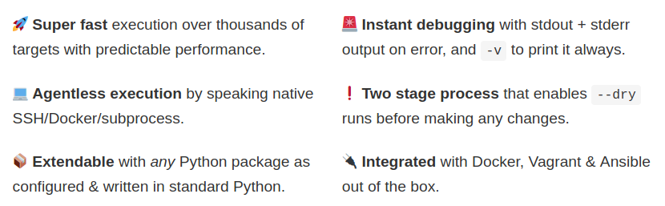
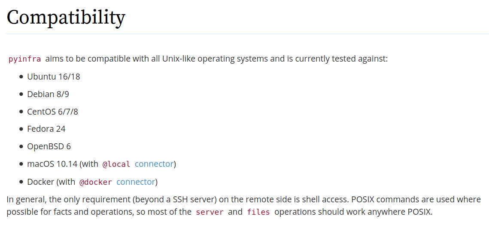

![](data:image/svg+xml,%3Csvg%20xmlns%3D%22http%3A//www.w3.org/2000/svg%22%20viewBox%3D%220%20-0.2%2011%2012.4%22%3E%0A%20%20%3Cdefs%3E%0A%20%20%20%20%3CclipPath%20id%3D%22cloth-tag%22%3E%3Cpolygon%20points%3D%220%2C0.40%200.5%2C0.04%201%2C0.70%201.5%2C0.15%202%2C0.52%202.5%2C0.17%203%2C0.54%203.5%2C0.55%204%2C0.18%204.5%2C0.49%205%2C0.20%205.5%2C0.02%206%2C0.38%206.5%2C0.77%207%2C0.16%207.5%2C0.66%208%2C0.07%208.5%2C0.06%209%2C0.54%209.5%2C0.02%2010%2C0.80%2010.5%2C0.62%2011%2C0.64%2011%2C11.57%2010.5%2C11.86%2010%2C11.33%209.5%2C11.31%209%2C11.41%208.5%2C11.59%208%2C11.51%207.5%2C11.23%207%2C11.46%206.5%2C11.29%206%2C11.79%205.5%2C11.50%205%2C11.77%204.5%2C11.26%204%2C11.42%203.5%2C11.69%203%2C11.88%202.5%2C11.82%202%2C11.80%201.5%2C11.41%201%2C11.50%200.5%2C11.67%200%2C11.68%22/%3E%3C/clipPath%3E%0A%20%20%20%20%3ClinearGradient%20id%3D%22dye-tag%22%20x1%3D%220%22%20y1%3D%220%22%20x2%3D%220.3%22%20y2%3D%221%22%3E%0A%20%20%20%20%20%20%3Cstop%20offset%3D%220%22%20stop-color%3D%22%23a64a26%22/%3E%0A%20%20%20%20%20%20%3Cstop%20offset%3D%221%22%20stop-color%3D%22%238d391b%22/%3E%0A%20%20%20%20%3C/linearGradient%3E%0A%20%20%3C/defs%3E%0A%20%20%3Cg%20clip-path%3D%22url%28%23cloth-tag%29%22%3E%0A%20%20%20%20%3Crect%20width%3D%2211%22%20height%3D%2212%22%20fill%3D%22url%28%23dye-tag%29%22/%3E%0A%20%20%20%20%3Cg%20fill%3D%22%23fffaf2%22%3E%3Crect%20x%3D%220.45%22%20y%3D%220%22%20width%3D%220.35%22%20height%3D%2212%22/%3E%3Crect%20x%3D%221.1%22%20y%3D%220%22%20width%3D%220.2%22%20height%3D%2212%22/%3E%3Crect%20x%3D%2210.2%22%20y%3D%220%22%20width%3D%220.35%22%20height%3D%2212%22/%3E%3Crect%20x%3D%229.7%22%20y%3D%220%22%20width%3D%220.2%22%20height%3D%2212%22/%3E%3C/g%3E%0A%20%20%20%20%3Cg%20fill%3D%22%23fff1e0%22%20shape-rendering%3D%22crispEdges%22%3E%3Crect%20x%3D%222%22%20y%3D%222.5%22%20width%3D%221%22%20height%3D%221%22/%3E%3Crect%20x%3D%223%22%20y%3D%222.5%22%20width%3D%221%22%20height%3D%221%22/%3E%3Crect%20x%3D%224%22%20y%3D%222.5%22%20width%3D%221%22%20height%3D%221%22/%3E%3Crect%20x%3D%222%22%20y%3D%223.5%22%20width%3D%221%22%20height%3D%221%22/%3E%3Crect%20x%3D%223%22%20y%3D%223.5%22%20width%3D%221%22%20height%3D%221%22/%3E%3Crect%20x%3D%222%22%20y%3D%224.5%22%20width%3D%221%22%20height%3D%221%22/%3E%3Crect%20x%3D%226%22%20y%3D%222.5%22%20width%3D%221%22%20height%3D%221%22/%3E%3Crect%20x%3D%227%22%20y%3D%222.5%22%20width%3D%221%22%20height%3D%221%22/%3E%3Crect%20x%3D%228%22%20y%3D%222.5%22%20width%3D%221%22%20height%3D%221%22/%3E%3Crect%20x%3D%227%22%20y%3D%223.5%22%20width%3D%221%22%20height%3D%221%22/%3E%3Crect%20x%3D%228%22%20y%3D%223.5%22%20width%3D%221%22%20height%3D%221%22/%3E%3Crect%20x%3D%228%22%20y%3D%224.5%22%20width%3D%221%22%20height%3D%221%22/%3E%3Crect%20x%3D%222%22%20y%3D%226.5%22%20width%3D%221%22%20height%3D%221%22/%3E%3Crect%20x%3D%224%22%20y%3D%226.5%22%20width%3D%221%22%20height%3D%221%22/%3E%3Crect%20x%3D%222%22%20y%3D%227.5%22%20width%3D%221%22%20height%3D%221%22/%3E%3Crect%20x%3D%224%22%20y%3D%227.5%22%20width%3D%221%22%20height%3D%221%22/%3E%3Crect%20x%3D%222%22%20y%3D%228.5%22%20width%3D%221%22%20height%3D%221%22/%3E%3Crect%20x%3D%224%22%20y%3D%228.5%22%20width%3D%221%22%20height%3D%221%22/%3E%3Crect%20x%3D%226%22%20y%3D%226.5%22%20width%3D%221%22%20height%3D%221%22/%3E%3Crect%20x%3D%228%22%20y%3D%226.5%22%20width%3D%221%22%20height%3D%221%22/%3E%3Crect%20x%3D%226%22%20y%3D%227.5%22%20width%3D%221%22%20height%3D%221%22/%3E%3Crect%20x%3D%228%22%20y%3D%227.5%22%20width%3D%221%22%20height%3D%221%22/%3E%3Crect%20x%3D%226%22%20y%3D%228.5%22%20width%3D%221%22%20height%3D%221%22/%3E%3Crect%20x%3D%228%22%20y%3D%228.5%22%20width%3D%221%22%20height%3D%221%22/%3E%3C/g%3E%0A%20%20%3C/g%3E%0A%3C/svg%3E) Unbounded battle in multiple dimensions
Unbounded battle in multiple dimensions![](data:image/svg+xml,%3Csvg%20xmlns%3D%22http%3A//www.w3.org/2000/svg%22%20viewBox%3D%220%20-0.2%2011%2012.4%22%3E%0A%20%20%3Cdefs%3E%0A%20%20%20%20%3CclipPath%20id%3D%22cloth-tag%22%3E%3Cpolygon%20points%3D%220%2C0.48%200.5%2C0.35%201%2C0.38%201.5%2C0.66%202%2C0.56%202.5%2C0.18%203%2C0.37%203.5%2C0.07%204%2C0.55%204.5%2C0.78%205%2C0.79%205.5%2C0.73%206%2C0.03%206.5%2C0.22%207%2C0.11%207.5%2C0.54%208%2C0.52%208.5%2C0.19%209%2C0.05%209.5%2C0.43%2010%2C0.75%2010.5%2C0.34%2011%2C0.44%2011%2C11.43%2010.5%2C11.91%2010%2C11.92%209.5%2C11.61%209%2C11.29%208.5%2C11.61%208%2C11.88%207.5%2C11.29%207%2C11.80%206.5%2C11.32%206%2C11.93%205.5%2C11.73%205%2C11.59%204.5%2C11.50%204%2C11.72%203.5%2C11.82%203%2C11.65%202.5%2C11.86%202%2C11.29%201.5%2C11.74%201%2C11.96%200.5%2C11.56%200%2C11.54%22/%3E%3C/clipPath%3E%0A%20%20%20%20%3ClinearGradient%20id%3D%22dye-tag%22%20x1%3D%220%22%20y1%3D%220%22%20x2%3D%220.3%22%20y2%3D%221%22%3E%0A%20%20%20%20%20%20%3Cstop%20offset%3D%220%22%20stop-color%3D%22%23a64a26%22/%3E%0A%20%20%20%20%20%20%3Cstop%20offset%3D%221%22%20stop-color%3D%22%238d391b%22/%3E%0A%20%20%20%20%3C/linearGradient%3E%0A%20%20%3C/defs%3E%0A%20%20%3Cg%20clip-path%3D%22url%28%23cloth-tag%29%22%3E%0A%20%20%20%20%3Crect%20width%3D%2211%22%20height%3D%2212%22%20fill%3D%22url%28%23dye-tag%29%22/%3E%0A%20%20%20%20%3Cg%20fill%3D%22%23fffaf2%22%3E%3Crect%20x%3D%220.45%22%20y%3D%220%22%20width%3D%220.35%22%20height%3D%2212%22/%3E%3Crect%20x%3D%221.1%22%20y%3D%220%22%20width%3D%220.2%22%20height%3D%2212%22/%3E%3Crect%20x%3D%2210.2%22%20y%3D%220%22%20width%3D%220.35%22%20height%3D%2212%22/%3E%3Crect%20x%3D%229.7%22%20y%3D%220%22%20width%3D%220.2%22%20height%3D%2212%22/%3E%3C/g%3E%0A%20%20%20%20%3Cg%20fill%3D%22%23fff1e0%22%20shape-rendering%3D%22crispEdges%22%3E%3Crect%20x%3D%222%22%20y%3D%222.5%22%20width%3D%221%22%20height%3D%221%22/%3E%3Crect%20x%3D%223%22%20y%3D%222.5%22%20width%3D%221%22%20height%3D%221%22/%3E%3Crect%20x%3D%224%22%20y%3D%222.5%22%20width%3D%221%22%20height%3D%221%22/%3E%3Crect%20x%3D%222%22%20y%3D%223.5%22%20width%3D%221%22%20height%3D%221%22/%3E%3Crect%20x%3D%224%22%20y%3D%223.5%22%20width%3D%221%22%20height%3D%221%22/%3E%3Crect%20x%3D%224%22%20y%3D%224.5%22%20width%3D%221%22%20height%3D%221%22/%3E%3Crect%20x%3D%226%22%20y%3D%222.5%22%20width%3D%221%22%20height%3D%221%22/%3E%3Crect%20x%3D%227%22%20y%3D%222.5%22%20width%3D%221%22%20height%3D%221%22/%3E%3Crect%20x%3D%228%22%20y%3D%222.5%22%20width%3D%221%22%20height%3D%221%22/%3E%3Crect%20x%3D%226%22%20y%3D%223.5%22%20width%3D%221%22%20height%3D%221%22/%3E%3Crect%20x%3D%228%22%20y%3D%223.5%22%20width%3D%221%22%20height%3D%221%22/%3E%3Crect%20x%3D%226%22%20y%3D%224.5%22%20width%3D%221%22%20height%3D%221%22/%3E%3Crect%20x%3D%223%22%20y%3D%226.5%22%20width%3D%221%22%20height%3D%221%22/%3E%3Crect%20x%3D%224%22%20y%3D%226.5%22%20width%3D%221%22%20height%3D%221%22/%3E%3Crect%20x%3D%224%22%20y%3D%227.5%22%20width%3D%221%22%20height%3D%221%22/%3E%3Crect%20x%3D%222%22%20y%3D%228.5%22%20width%3D%221%22%20height%3D%221%22/%3E%3Crect%20x%3D%223%22%20y%3D%228.5%22%20width%3D%221%22%20height%3D%221%22/%3E%3Crect%20x%3D%224%22%20y%3D%228.5%22%20width%3D%221%22%20height%3D%221%22/%3E%3Crect%20x%3D%226%22%20y%3D%226.5%22%20width%3D%221%22%20height%3D%221%22/%3E%3Crect%20x%3D%227%22%20y%3D%226.5%22%20width%3D%221%22%20height%3D%221%22/%3E%3Crect%20x%3D%226%22%20y%3D%227.5%22%20width%3D%221%22%20height%3D%221%22/%3E%3Crect%20x%3D%226%22%20y%3D%228.5%22%20width%3D%221%22%20height%3D%221%22/%3E%3Crect%20x%3D%227%22%20y%3D%228.5%22%20width%3D%221%22%20height%3D%221%22/%3E%3Crect%20x%3D%228%22%20y%3D%228.5%22%20width%3D%221%22%20height%3D%221%22/%3E%3C/g%3E%0A%20%20%3C/g%3E%0A%3C/svg%3E) Lessons learned from games
Lessons learned from games![](data:image/svg+xml,%3Csvg%20xmlns%3D%22http%3A//www.w3.org/2000/svg%22%20viewBox%3D%220%20-0.2%2011%2012.4%22%3E%0A%20%20%3Cdefs%3E%0A%20%20%20%20%3CclipPath%20id%3D%22cloth-tag%22%3E%3Cpolygon%20points%3D%220%2C0.27%200.5%2C0.42%201%2C0.16%201.5%2C0.15%202%2C0.51%202.5%2C0.55%203%2C0.54%203.5%2C0.29%204%2C0.65%204.5%2C0.66%205%2C0.68%205.5%2C0.33%206%2C0.26%206.5%2C0.33%207%2C0.30%207.5%2C0.17%208%2C0.30%208.5%2C0.78%209%2C0.45%209.5%2C0.41%2010%2C0.42%2010.5%2C0.76%2011%2C0.18%2011%2C11.82%2010.5%2C11.62%2010%2C11.83%209.5%2C11.66%209%2C11.86%208.5%2C11.69%208%2C11.70%207.5%2C11.49%207%2C11.20%206.5%2C11.77%206%2C11.82%205.5%2C11.21%205%2C11.97%204.5%2C11.66%204%2C11.54%203.5%2C11.51%203%2C11.35%202.5%2C11.86%202%2C11.63%201.5%2C11.35%201%2C11.96%200.5%2C11.88%200%2C11.94%22/%3E%3C/clipPath%3E%0A%20%20%20%20%3ClinearGradient%20id%3D%22dye-tag%22%20x1%3D%220%22%20y1%3D%220%22%20x2%3D%220.3%22%20y2%3D%221%22%3E%0A%20%20%20%20%20%20%3Cstop%20offset%3D%220%22%20stop-color%3D%22%23a64a26%22/%3E%0A%20%20%20%20%20%20%3Cstop%20offset%3D%221%22%20stop-color%3D%22%238d391b%22/%3E%0A%20%20%20%20%3C/linearGradient%3E%0A%20%20%3C/defs%3E%0A%20%20%3Cg%20clip-path%3D%22url%28%23cloth-tag%29%22%3E%0A%20%20%20%20%3Crect%20width%3D%2211%22%20height%3D%2212%22%20fill%3D%22url%28%23dye-tag%29%22/%3E%0A%20%20%20%20%3Cg%20fill%3D%22%23fffaf2%22%3E%3Crect%20x%3D%220.45%22%20y%3D%220%22%20width%3D%220.35%22%20height%3D%2212%22/%3E%3Crect%20x%3D%221.1%22%20y%3D%220%22%20width%3D%220.2%22%20height%3D%2212%22/%3E%3Crect%20x%3D%2210.2%22%20y%3D%220%22%20width%3D%220.35%22%20height%3D%2212%22/%3E%3Crect%20x%3D%229.7%22%20y%3D%220%22%20width%3D%220.2%22%20height%3D%2212%22/%3E%3C/g%3E%0A%20%20%20%20%3Cg%20fill%3D%22%23fff1e0%22%20shape-rendering%3D%22crispEdges%22%3E%3Crect%20x%3D%222%22%20y%3D%222.5%22%20width%3D%221%22%20height%3D%221%22/%3E%3Crect%20x%3D%223%22%20y%3D%222.5%22%20width%3D%221%22%20height%3D%221%22/%3E%3Crect%20x%3D%224%22%20y%3D%222.5%22%20width%3D%221%22%20height%3D%221%22/%3E%3Crect%20x%3D%224%22%20y%3D%223.5%22%20width%3D%221%22%20height%3D%221%22/%3E%3Crect%20x%3D%224%22%20y%3D%224.5%22%20width%3D%221%22%20height%3D%221%22/%3E%3Crect%20x%3D%228%22%20y%3D%222.5%22%20width%3D%221%22%20height%3D%221%22/%3E%3Crect%20x%3D%226%22%20y%3D%224.5%22%20width%3D%221%22%20height%3D%221%22/%3E%3Crect%20x%3D%227%22%20y%3D%224.5%22%20width%3D%221%22%20height%3D%221%22/%3E%3Crect%20x%3D%228%22%20y%3D%224.5%22%20width%3D%221%22%20height%3D%221%22/%3E%3Crect%20x%3D%224%22%20y%3D%226.5%22%20width%3D%221%22%20height%3D%221%22/%3E%3Crect%20x%3D%224%22%20y%3D%227.5%22%20width%3D%221%22%20height%3D%221%22/%3E%3Crect%20x%3D%222%22%20y%3D%228.5%22%20width%3D%221%22%20height%3D%221%22/%3E%3Crect%20x%3D%223%22%20y%3D%228.5%22%20width%3D%221%22%20height%3D%221%22/%3E%3Crect%20x%3D%224%22%20y%3D%228.5%22%20width%3D%221%22%20height%3D%221%22/%3E%3Crect%20x%3D%226%22%20y%3D%226.5%22%20width%3D%221%22%20height%3D%221%22/%3E%3Crect%20x%3D%227%22%20y%3D%226.5%22%20width%3D%221%22%20height%3D%221%22/%3E%3Crect%20x%3D%228%22%20y%3D%226.5%22%20width%3D%221%22%20height%3D%221%22/%3E%3Crect%20x%3D%228%22%20y%3D%228.5%22%20width%3D%221%22%20height%3D%221%22/%3E%3C/g%3E%0A%20%20%3C/g%3E%0A%3C/svg%3E) Prusa MK4 upgrade
Prusa MK4 upgrade![](data:image/svg+xml,%3Csvg%20xmlns%3D%22http%3A//www.w3.org/2000/svg%22%20viewBox%3D%220%20-0.2%2011%2012.4%22%3E%0A%20%20%3Cdefs%3E%0A%20%20%20%20%3CclipPath%20id%3D%22cloth-tag%22%3E%3Cpolygon%20points%3D%220%2C0.03%200.5%2C0.66%201%2C0.59%201.5%2C0.10%202%2C0.59%202.5%2C0.38%203%2C0.05%203.5%2C0.79%204%2C0.77%204.5%2C0.58%205%2C0.02%205.5%2C0.33%206%2C0.13%206.5%2C0.36%207%2C0.77%207.5%2C0.42%208%2C0.02%208.5%2C0.79%209%2C0.29%209.5%2C0.11%2010%2C0.49%2010.5%2C0.72%2011%2C0.58%2011%2C11.91%2010.5%2C11.62%2010%2C12.00%209.5%2C11.25%209%2C11.58%208.5%2C11.99%208%2C11.92%207.5%2C11.31%207%2C11.30%206.5%2C11.78%206%2C11.36%205.5%2C11.31%205%2C11.27%204.5%2C11.93%204%2C11.81%203.5%2C11.99%203%2C11.54%202.5%2C11.22%202%2C11.68%201.5%2C11.75%201%2C11.78%200.5%2C11.44%200%2C11.51%22/%3E%3C/clipPath%3E%0A%20%20%20%20%3ClinearGradient%20id%3D%22dye-tag%22%20x1%3D%220%22%20y1%3D%220%22%20x2%3D%220.3%22%20y2%3D%221%22%3E%0A%20%20%20%20%20%20%3Cstop%20offset%3D%220%22%20stop-color%3D%22%23a64a26%22/%3E%0A%20%20%20%20%20%20%3Cstop%20offset%3D%221%22%20stop-color%3D%22%238d391b%22/%3E%0A%20%20%20%20%3C/linearGradient%3E%0A%20%20%3C/defs%3E%0A%20%20%3Cg%20clip-path%3D%22url%28%23cloth-tag%29%22%3E%0A%20%20%20%20%3Crect%20width%3D%2211%22%20height%3D%2212%22%20fill%3D%22url%28%23dye-tag%29%22/%3E%0A%20%20%20%20%3Cg%20fill%3D%22%23fffaf2%22%3E%3Crect%20x%3D%220.45%22%20y%3D%220%22%20width%3D%220.35%22%20height%3D%2212%22/%3E%3Crect%20x%3D%221.1%22%20y%3D%220%22%20width%3D%220.2%22%20height%3D%2212%22/%3E%3Crect%20x%3D%2210.2%22%20y%3D%220%22%20width%3D%220.35%22%20height%3D%2212%22/%3E%3Crect%20x%3D%229.7%22%20y%3D%220%22%20width%3D%220.2%22%20height%3D%2212%22/%3E%3C/g%3E%0A%20%20%20%20%3Cg%20fill%3D%22%23fff1e0%22%20shape-rendering%3D%22crispEdges%22%3E%3Crect%20x%3D%222%22%20y%3D%222.5%22%20width%3D%221%22%20height%3D%221%22/%3E%3Crect%20x%3D%223%22%20y%3D%222.5%22%20width%3D%221%22%20height%3D%221%22/%3E%3Crect%20x%3D%224%22%20y%3D%222.5%22%20width%3D%221%22%20height%3D%221%22/%3E%3Crect%20x%3D%224%22%20y%3D%223.5%22%20width%3D%221%22%20height%3D%221%22/%3E%3Crect%20x%3D%222%22%20y%3D%224.5%22%20width%3D%221%22%20height%3D%221%22/%3E%3Crect%20x%3D%224%22%20y%3D%224.5%22%20width%3D%221%22%20height%3D%221%22/%3E%3Crect%20x%3D%228%22%20y%3D%222.5%22%20width%3D%221%22%20height%3D%221%22/%3E%3Crect%20x%3D%226%22%20y%3D%223.5%22%20width%3D%221%22%20height%3D%221%22/%3E%3Crect%20x%3D%228%22%20y%3D%223.5%22%20width%3D%221%22%20height%3D%221%22/%3E%3Crect%20x%3D%226%22%20y%3D%224.5%22%20width%3D%221%22%20height%3D%221%22/%3E%3Crect%20x%3D%227%22%20y%3D%224.5%22%20width%3D%221%22%20height%3D%221%22/%3E%3Crect%20x%3D%228%22%20y%3D%224.5%22%20width%3D%221%22%20height%3D%221%22/%3E%3Crect%20x%3D%222%22%20y%3D%226.5%22%20width%3D%221%22%20height%3D%221%22/%3E%3Crect%20x%3D%224%22%20y%3D%226.5%22%20width%3D%221%22%20height%3D%221%22/%3E%3Crect%20x%3D%224%22%20y%3D%227.5%22%20width%3D%221%22%20height%3D%221%22/%3E%3Crect%20x%3D%222%22%20y%3D%228.5%22%20width%3D%221%22%20height%3D%221%22/%3E%3Crect%20x%3D%223%22%20y%3D%228.5%22%20width%3D%221%22%20height%3D%221%22/%3E%3Crect%20x%3D%224%22%20y%3D%228.5%22%20width%3D%221%22%20height%3D%221%22/%3E%3Crect%20x%3D%226%22%20y%3D%226.5%22%20width%3D%221%22%20height%3D%221%22/%3E%3Crect%20x%3D%227%22%20y%3D%226.5%22%20width%3D%221%22%20height%3D%221%22/%3E%3Crect%20x%3D%228%22%20y%3D%226.5%22%20width%3D%221%22%20height%3D%221%22/%3E%3Crect%20x%3D%226%22%20y%3D%227.5%22%20width%3D%221%22%20height%3D%221%22/%3E%3Crect%20x%3D%228%22%20y%3D%227.5%22%20width%3D%221%22%20height%3D%221%22/%3E%3Crect%20x%3D%228%22%20y%3D%228.5%22%20width%3D%221%22%20height%3D%221%22/%3E%3C/g%3E%0A%20%20%3C/g%3E%0A%3C/svg%3E) HobbyCell
HobbyCell![](data:image/svg+xml,%3Csvg%20xmlns%3D%22http%3A//www.w3.org/2000/svg%22%20viewBox%3D%220%20-0.2%2011%2012.4%22%3E%0A%20%20%3Cdefs%3E%0A%20%20%20%20%3CclipPath%20id%3D%22cloth-tag%22%3E%3Cpolygon%20points%3D%220%2C0.11%200.5%2C0.62%201%2C0.07%201.5%2C0.16%202%2C0.30%202.5%2C0.42%203%2C0.56%203.5%2C0.74%204%2C0.01%204.5%2C0.52%205%2C0.33%205.5%2C0.54%206%2C0.68%206.5%2C0.52%207%2C0.70%207.5%2C0.47%208%2C0.19%208.5%2C0.72%209%2C0.59%209.5%2C0.70%2010%2C0.63%2010.5%2C0.11%2011%2C0.46%2011%2C11.28%2010.5%2C11.44%2010%2C11.40%209.5%2C11.39%209%2C11.34%208.5%2C11.25%208%2C11.99%207.5%2C11.29%207%2C11.23%206.5%2C11.48%206%2C11.78%205.5%2C11.37%205%2C11.48%204.5%2C11.93%204%2C11.97%203.5%2C11.74%203%2C11.84%202.5%2C11.22%202%2C11.54%201.5%2C11.89%201%2C11.38%200.5%2C11.73%200%2C11.24%22/%3E%3C/clipPath%3E%0A%20%20%20%20%3ClinearGradient%20id%3D%22dye-tag%22%20x1%3D%220%22%20y1%3D%220%22%20x2%3D%220.3%22%20y2%3D%221%22%3E%0A%20%20%20%20%20%20%3Cstop%20offset%3D%220%22%20stop-color%3D%22%23a64a26%22/%3E%0A%20%20%20%20%20%20%3Cstop%20offset%3D%221%22%20stop-color%3D%22%238d391b%22/%3E%0A%20%20%20%20%3C/linearGradient%3E%0A%20%20%3C/defs%3E%0A%20%20%3Cg%20clip-path%3D%22url%28%23cloth-tag%29%22%3E%0A%20%20%20%20%3Crect%20width%3D%2211%22%20height%3D%2212%22%20fill%3D%22url%28%23dye-tag%29%22/%3E%0A%20%20%20%20%3Cg%20fill%3D%22%23fffaf2%22%3E%3Crect%20x%3D%220.45%22%20y%3D%220%22%20width%3D%220.35%22%20height%3D%2212%22/%3E%3Crect%20x%3D%221.1%22%20y%3D%220%22%20width%3D%220.2%22%20height%3D%2212%22/%3E%3Crect%20x%3D%2210.2%22%20y%3D%220%22%20width%3D%220.35%22%20height%3D%2212%22/%3E%3Crect%20x%3D%229.7%22%20y%3D%220%22%20width%3D%220.2%22%20height%3D%2212%22/%3E%3C/g%3E%0A%20%20%20%20%3Cg%20fill%3D%22%23fff1e0%22%20shape-rendering%3D%22crispEdges%22%3E%3Crect%20x%3D%222%22%20y%3D%222.5%22%20width%3D%221%22%20height%3D%221%22/%3E%3Crect%20x%3D%224%22%20y%3D%222.5%22%20width%3D%221%22%20height%3D%221%22/%3E%3Crect%20x%3D%222%22%20y%3D%223.5%22%20width%3D%221%22%20height%3D%221%22/%3E%3Crect%20x%3D%222%22%20y%3D%224.5%22%20width%3D%221%22%20height%3D%221%22/%3E%3Crect%20x%3D%223%22%20y%3D%224.5%22%20width%3D%221%22%20height%3D%221%22/%3E%3Crect%20x%3D%224%22%20y%3D%224.5%22%20width%3D%221%22%20height%3D%221%22/%3E%3Crect%20x%3D%226%22%20y%3D%222.5%22%20width%3D%221%22%20height%3D%221%22/%3E%3Crect%20x%3D%227%22%20y%3D%222.5%22%20width%3D%221%22%20height%3D%221%22/%3E%3Crect%20x%3D%228%22%20y%3D%222.5%22%20width%3D%221%22%20height%3D%221%22/%3E%3Crect%20x%3D%228%22%20y%3D%223.5%22%20width%3D%221%22%20height%3D%221%22/%3E%3Crect%20x%3D%226%22%20y%3D%224.5%22%20width%3D%221%22%20height%3D%221%22/%3E%3Crect%20x%3D%227%22%20y%3D%224.5%22%20width%3D%221%22%20height%3D%221%22/%3E%3Crect%20x%3D%228%22%20y%3D%224.5%22%20width%3D%221%22%20height%3D%221%22/%3E%3Crect%20x%3D%222%22%20y%3D%226.5%22%20width%3D%221%22%20height%3D%221%22/%3E%3Crect%20x%3D%223%22%20y%3D%226.5%22%20width%3D%221%22%20height%3D%221%22/%3E%3Crect%20x%3D%224%22%20y%3D%226.5%22%20width%3D%221%22%20height%3D%221%22/%3E%3Crect%20x%3D%222%22%20y%3D%227.5%22%20width%3D%221%22%20height%3D%221%22/%3E%3Crect%20x%3D%222%22%20y%3D%228.5%22%20width%3D%221%22%20height%3D%221%22/%3E%3Crect%20x%3D%224%22%20y%3D%228.5%22%20width%3D%221%22%20height%3D%221%22/%3E%3Crect%20x%3D%226%22%20y%3D%226.5%22%20width%3D%221%22%20height%3D%221%22/%3E%3Crect%20x%3D%227%22%20y%3D%226.5%22%20width%3D%221%22%20height%3D%221%22/%3E%3Crect%20x%3D%228%22%20y%3D%226.5%22%20width%3D%221%22%20height%3D%221%22/%3E%3Crect%20x%3D%228%22%20y%3D%227.5%22%20width%3D%221%22%20height%3D%221%22/%3E%3Crect%20x%3D%226%22%20y%3D%228.5%22%20width%3D%221%22%20height%3D%221%22/%3E%3Crect%20x%3D%227%22%20y%3D%228.5%22%20width%3D%221%22%20height%3D%221%22/%3E%3Crect%20x%3D%228%22%20y%3D%228.5%22%20width%3D%221%22%20height%3D%221%22/%3E%3C/g%3E%0A%20%20%3C/g%3E%0A%3C/svg%3E) CaptchaCoin
CaptchaCoin![](data:image/svg+xml,%3Csvg%20xmlns%3D%22http%3A//www.w3.org/2000/svg%22%20viewBox%3D%220%20-0.2%2011%2012.4%22%3E%0A%20%20%3Cdefs%3E%0A%20%20%20%20%3CclipPath%20id%3D%22cloth-tag%22%3E%3Cpolygon%20points%3D%220%2C0.08%200.5%2C0.01%201%2C0.65%201.5%2C0.33%202%2C0.78%202.5%2C0.47%203%2C0.22%203.5%2C0.78%204%2C0.77%204.5%2C0.40%205%2C0.34%205.5%2C0.52%206%2C0.12%206.5%2C0.32%207%2C0.53%207.5%2C0.31%208%2C0.36%208.5%2C0.65%209%2C0.13%209.5%2C0.36%2010%2C0.66%2010.5%2C0.41%2011%2C0.08%2011%2C11.47%2010.5%2C11.50%2010%2C11.29%209.5%2C11.56%209%2C11.41%208.5%2C11.77%208%2C11.98%207.5%2C11.88%207%2C11.45%206.5%2C11.77%206%2C11.36%205.5%2C11.94%205%2C11.62%204.5%2C11.48%204%2C11.87%203.5%2C11.22%203%2C11.41%202.5%2C11.46%202%2C11.74%201.5%2C11.73%201%2C11.25%200.5%2C11.47%200%2C11.21%22/%3E%3C/clipPath%3E%0A%20%20%20%20%3ClinearGradient%20id%3D%22dye-tag%22%20x1%3D%220%22%20y1%3D%220%22%20x2%3D%220.3%22%20y2%3D%221%22%3E%0A%20%20%20%20%20%20%3Cstop%20offset%3D%220%22%20stop-color%3D%22%23a64a26%22/%3E%0A%20%20%20%20%20%20%3Cstop%20offset%3D%221%22%20stop-color%3D%22%238d391b%22/%3E%0A%20%20%20%20%3C/linearGradient%3E%0A%20%20%3C/defs%3E%0A%20%20%3Cg%20clip-path%3D%22url%28%23cloth-tag%29%22%3E%0A%20%20%20%20%3Crect%20width%3D%2211%22%20height%3D%2212%22%20fill%3D%22url%28%23dye-tag%29%22/%3E%0A%20%20%20%20%3Cg%20fill%3D%22%23fffaf2%22%3E%3Crect%20x%3D%220.45%22%20y%3D%220%22%20width%3D%220.35%22%20height%3D%2212%22/%3E%3Crect%20x%3D%221.1%22%20y%3D%220%22%20width%3D%220.2%22%20height%3D%2212%22/%3E%3Crect%20x%3D%2210.2%22%20y%3D%220%22%20width%3D%220.35%22%20height%3D%2212%22/%3E%3Crect%20x%3D%229.7%22%20y%3D%220%22%20width%3D%220.2%22%20height%3D%2212%22/%3E%3C/g%3E%0A%20%20%20%20%3Cg%20fill%3D%22%23fff1e0%22%20shape-rendering%3D%22crispEdges%22%3E%3Crect%20x%3D%222%22%20y%3D%222.5%22%20width%3D%221%22%20height%3D%221%22/%3E%3Crect%20x%3D%222%22%20y%3D%223.5%22%20width%3D%221%22%20height%3D%221%22/%3E%3Crect%20x%3D%224%22%20y%3D%223.5%22%20width%3D%221%22%20height%3D%221%22/%3E%3Crect%20x%3D%222%22%20y%3D%224.5%22%20width%3D%221%22%20height%3D%221%22/%3E%3Crect%20x%3D%228%22%20y%3D%222.5%22%20width%3D%221%22%20height%3D%221%22/%3E%3Crect%20x%3D%226%22%20y%3D%223.5%22%20width%3D%221%22%20height%3D%221%22/%3E%3Crect%20x%3D%228%22%20y%3D%223.5%22%20width%3D%221%22%20height%3D%221%22/%3E%3Crect%20x%3D%226%22%20y%3D%224.5%22%20width%3D%221%22%20height%3D%221%22/%3E%3Crect%20x%3D%227%22%20y%3D%224.5%22%20width%3D%221%22%20height%3D%221%22/%3E%3Crect%20x%3D%228%22%20y%3D%224.5%22%20width%3D%221%22%20height%3D%221%22/%3E%3Crect%20x%3D%222%22%20y%3D%226.5%22%20width%3D%221%22%20height%3D%221%22/%3E%3Crect%20x%3D%222%22%20y%3D%227.5%22%20width%3D%221%22%20height%3D%221%22/%3E%3Crect%20x%3D%224%22%20y%3D%227.5%22%20width%3D%221%22%20height%3D%221%22/%3E%3Crect%20x%3D%222%22%20y%3D%228.5%22%20width%3D%221%22%20height%3D%221%22/%3E%3Crect%20x%3D%226%22%20y%3D%226.5%22%20width%3D%221%22%20height%3D%221%22/%3E%3Crect%20x%3D%227%22%20y%3D%226.5%22%20width%3D%221%22%20height%3D%221%22/%3E%3Crect%20x%3D%228%22%20y%3D%226.5%22%20width%3D%221%22%20height%3D%221%22/%3E%3Crect%20x%3D%226%22%20y%3D%227.5%22%20width%3D%221%22%20height%3D%221%22/%3E%3Crect%20x%3D%228%22%20y%3D%227.5%22%20width%3D%221%22%20height%3D%221%22/%3E%3Crect%20x%3D%228%22%20y%3D%228.5%22%20width%3D%221%22%20height%3D%221%22/%3E%3C/g%3E%0A%20%20%3C/g%3E%0A%3C/svg%3E) SolarPi experiment 2: Finally something that works
SolarPi experiment 2: Finally something that works![](data:image/svg+xml,%3Csvg%20xmlns%3D%22http%3A//www.w3.org/2000/svg%22%20viewBox%3D%220%20-0.2%2011%2012.4%22%3E%0A%20%20%3Cdefs%3E%0A%20%20%20%20%3CclipPath%20id%3D%22cloth-tag%22%3E%3Cpolygon%20points%3D%220%2C0.11%200.5%2C0.78%201%2C0.26%201.5%2C0.35%202%2C0.16%202.5%2C0.47%203%2C0.19%203.5%2C0.33%204%2C0.60%204.5%2C0.31%205%2C0.01%205.5%2C0.22%206%2C0.78%206.5%2C0.14%207%2C0.05%207.5%2C0.27%208%2C0.28%208.5%2C0.49%209%2C0.52%209.5%2C0.23%2010%2C0.08%2010.5%2C0.10%2011%2C0.74%2011%2C11.87%2010.5%2C11.41%2010%2C11.84%209.5%2C11.69%209%2C11.90%208.5%2C11.43%208%2C11.70%207.5%2C11.21%207%2C11.85%206.5%2C11.88%206%2C11.63%205.5%2C11.51%205%2C11.81%204.5%2C11.31%204%2C11.67%203.5%2C11.60%203%2C11.24%202.5%2C11.29%202%2C11.90%201.5%2C11.27%201%2C11.99%200.5%2C11.37%200%2C11.93%22/%3E%3C/clipPath%3E%0A%20%20%20%20%3ClinearGradient%20id%3D%22dye-tag%22%20x1%3D%220%22%20y1%3D%220%22%20x2%3D%220.3%22%20y2%3D%221%22%3E%0A%20%20%20%20%20%20%3Cstop%20offset%3D%220%22%20stop-color%3D%22%23a64a26%22/%3E%0A%20%20%20%20%20%20%3Cstop%20offset%3D%221%22%20stop-color%3D%22%238d391b%22/%3E%0A%20%20%20%20%3C/linearGradient%3E%0A%20%20%3C/defs%3E%0A%20%20%3Cg%20clip-path%3D%22url%28%23cloth-tag%29%22%3E%0A%20%20%20%20%3Crect%20width%3D%2211%22%20height%3D%2212%22%20fill%3D%22url%28%23dye-tag%29%22/%3E%0A%20%20%20%20%3Cg%20fill%3D%22%23fffaf2%22%3E%3Crect%20x%3D%220.45%22%20y%3D%220%22%20width%3D%220.35%22%20height%3D%2212%22/%3E%3Crect%20x%3D%221.1%22%20y%3D%220%22%20width%3D%220.2%22%20height%3D%2212%22/%3E%3Crect%20x%3D%2210.2%22%20y%3D%220%22%20width%3D%220.35%22%20height%3D%2212%22/%3E%3Crect%20x%3D%229.7%22%20y%3D%220%22%20width%3D%220.2%22%20height%3D%2212%22/%3E%3C/g%3E%0A%20%20%20%20%3Cg%20fill%3D%22%23fff1e0%22%20shape-rendering%3D%22crispEdges%22%3E%3Crect%20x%3D%223%22%20y%3D%222.5%22%20width%3D%221%22%20height%3D%221%22/%3E%3Crect%20x%3D%224%22%20y%3D%222.5%22%20width%3D%221%22%20height%3D%221%22/%3E%3Crect%20x%3D%224%22%20y%3D%223.5%22%20width%3D%221%22%20height%3D%221%22/%3E%3Crect%20x%3D%222%22%20y%3D%224.5%22%20width%3D%221%22%20height%3D%221%22/%3E%3Crect%20x%3D%223%22%20y%3D%224.5%22%20width%3D%221%22%20height%3D%221%22/%3E%3Crect%20x%3D%224%22%20y%3D%224.5%22%20width%3D%221%22%20height%3D%221%22/%3E%3Crect%20x%3D%226%22%20y%3D%222.5%22%20width%3D%221%22%20height%3D%221%22/%3E%3Crect%20x%3D%227%22%20y%3D%222.5%22%20width%3D%221%22%20height%3D%221%22/%3E%3Crect%20x%3D%226%22%20y%3D%223.5%22%20width%3D%221%22%20height%3D%221%22/%3E%3Crect%20x%3D%226%22%20y%3D%224.5%22%20width%3D%221%22%20height%3D%221%22/%3E%3Crect%20x%3D%227%22%20y%3D%224.5%22%20width%3D%221%22%20height%3D%221%22/%3E%3Crect%20x%3D%228%22%20y%3D%224.5%22%20width%3D%221%22%20height%3D%221%22/%3E%3Crect%20x%3D%222%22%20y%3D%226.5%22%20width%3D%221%22%20height%3D%221%22/%3E%3Crect%20x%3D%223%22%20y%3D%226.5%22%20width%3D%221%22%20height%3D%221%22/%3E%3Crect%20x%3D%224%22%20y%3D%226.5%22%20width%3D%221%22%20height%3D%221%22/%3E%3Crect%20x%3D%223%22%20y%3D%228.5%22%20width%3D%221%22%20height%3D%221%22/%3E%3Crect%20x%3D%226%22%20y%3D%226.5%22%20width%3D%221%22%20height%3D%221%22/%3E%3Crect%20x%3D%227%22%20y%3D%226.5%22%20width%3D%221%22%20height%3D%221%22/%3E%3Crect%20x%3D%228%22%20y%3D%226.5%22%20width%3D%221%22%20height%3D%221%22/%3E%3Crect%20x%3D%227%22%20y%3D%228.5%22%20width%3D%221%22%20height%3D%221%22/%3E%3C/g%3E%0A%20%20%3C/g%3E%0A%3C/svg%3E) How to run your own LLM (GPT)
How to run your own LLM (GPT)![](data:image/svg+xml,%3Csvg%20xmlns%3D%22http%3A//www.w3.org/2000/svg%22%20viewBox%3D%220%20-0.2%2011%2012.4%22%3E%0A%20%20%3Cdefs%3E%0A%20%20%20%20%3CclipPath%20id%3D%22cloth-tag%22%3E%3Cpolygon%20points%3D%220%2C0.33%200.5%2C0.33%201%2C0.52%201.5%2C0.54%202%2C0.22%202.5%2C0.41%203%2C0.12%203.5%2C0.66%204%2C0.54%204.5%2C0.06%205%2C0.18%205.5%2C0.35%206%2C0.62%206.5%2C0.56%207%2C0.11%207.5%2C0.01%208%2C0.60%208.5%2C0.18%209%2C0.27%209.5%2C0.56%2010%2C0.49%2010.5%2C0.19%2011%2C0.17%2011%2C11.70%2010.5%2C11.63%2010%2C11.37%209.5%2C11.36%209%2C11.46%208.5%2C11.87%208%2C11.30%207.5%2C11.53%207%2C11.76%206.5%2C11.44%206%2C11.50%205.5%2C11.33%205%2C11.39%204.5%2C11.32%204%2C11.63%203.5%2C11.29%203%2C11.63%202.5%2C11.49%202%2C11.90%201.5%2C11.22%201%2C11.28%200.5%2C11.64%200%2C11.56%22/%3E%3C/clipPath%3E%0A%20%20%20%20%3ClinearGradient%20id%3D%22dye-tag%22%20x1%3D%220%22%20y1%3D%220%22%20x2%3D%220.3%22%20y2%3D%221%22%3E%0A%20%20%20%20%20%20%3Cstop%20offset%3D%220%22%20stop-color%3D%22%23a64a26%22/%3E%0A%20%20%20%20%20%20%3Cstop%20offset%3D%221%22%20stop-color%3D%22%238d391b%22/%3E%0A%20%20%20%20%3C/linearGradient%3E%0A%20%20%3C/defs%3E%0A%20%20%3Cg%20clip-path%3D%22url%28%23cloth-tag%29%22%3E%0A%20%20%20%20%3Crect%20width%3D%2211%22%20height%3D%2212%22%20fill%3D%22url%28%23dye-tag%29%22/%3E%0A%20%20%20%20%3Cg%20fill%3D%22%23fffaf2%22%3E%3Crect%20x%3D%220.45%22%20y%3D%220%22%20width%3D%220.35%22%20height%3D%2212%22/%3E%3Crect%20x%3D%221.1%22%20y%3D%220%22%20width%3D%220.2%22%20height%3D%2212%22/%3E%3Crect%20x%3D%2210.2%22%20y%3D%220%22%20width%3D%220.35%22%20height%3D%2212%22/%3E%3Crect%20x%3D%229.7%22%20y%3D%220%22%20width%3D%220.2%22%20height%3D%2212%22/%3E%3C/g%3E%0A%20%20%20%20%3Cg%20fill%3D%22%23fff1e0%22%20shape-rendering%3D%22crispEdges%22%3E%3Crect%20x%3D%222%22%20y%3D%222.5%22%20width%3D%221%22%20height%3D%221%22/%3E%3Crect%20x%3D%224%22%20y%3D%222.5%22%20width%3D%221%22%20height%3D%221%22/%3E%3Crect%20x%3D%222%22%20y%3D%223.5%22%20width%3D%221%22%20height%3D%221%22/%3E%3Crect%20x%3D%223%22%20y%3D%223.5%22%20width%3D%221%22%20height%3D%221%22/%3E%3Crect%20x%3D%222%22%20y%3D%224.5%22%20width%3D%221%22%20height%3D%221%22/%3E%3Crect%20x%3D%223%22%20y%3D%224.5%22%20width%3D%221%22%20height%3D%221%22/%3E%3Crect%20x%3D%224%22%20y%3D%224.5%22%20width%3D%221%22%20height%3D%221%22/%3E%3Crect%20x%3D%226%22%20y%3D%222.5%22%20width%3D%221%22%20height%3D%221%22/%3E%3Crect%20x%3D%228%22%20y%3D%223.5%22%20width%3D%221%22%20height%3D%221%22/%3E%3Crect%20x%3D%227%22%20y%3D%224.5%22%20width%3D%221%22%20height%3D%221%22/%3E%3Crect%20x%3D%228%22%20y%3D%224.5%22%20width%3D%221%22%20height%3D%221%22/%3E%3Crect%20x%3D%222%22%20y%3D%226.5%22%20width%3D%221%22%20height%3D%221%22/%3E%3Crect%20x%3D%223%22%20y%3D%226.5%22%20width%3D%221%22%20height%3D%221%22/%3E%3Crect%20x%3D%224%22%20y%3D%226.5%22%20width%3D%221%22%20height%3D%221%22/%3E%3Crect%20x%3D%222%22%20y%3D%227.5%22%20width%3D%221%22%20height%3D%221%22/%3E%3Crect%20x%3D%223%22%20y%3D%227.5%22%20width%3D%221%22%20height%3D%221%22/%3E%3Crect%20x%3D%222%22%20y%3D%228.5%22%20width%3D%221%22%20height%3D%221%22/%3E%3Crect%20x%3D%224%22%20y%3D%228.5%22%20width%3D%221%22%20height%3D%221%22/%3E%3Crect%20x%3D%227%22%20y%3D%226.5%22%20width%3D%221%22%20height%3D%221%22/%3E%3Crect%20x%3D%228%22%20y%3D%226.5%22%20width%3D%221%22%20height%3D%221%22/%3E%3Crect%20x%3D%228%22%20y%3D%227.5%22%20width%3D%221%22%20height%3D%221%22/%3E%3Crect%20x%3D%226%22%20y%3D%228.5%22%20width%3D%221%22%20height%3D%221%22/%3E%3C/g%3E%0A%20%20%3C/g%3E%0A%3C/svg%3E) SolarPi experiment 1: The PiJuice Fiasco
SolarPi experiment 1: The PiJuice Fiasco![](data:image/svg+xml,%3Csvg%20xmlns%3D%22http%3A//www.w3.org/2000/svg%22%20viewBox%3D%220%20-0.2%2011%2012.4%22%3E%0A%20%20%3Cdefs%3E%0A%20%20%20%20%3CclipPath%20id%3D%22cloth-tag%22%3E%3Cpolygon%20points%3D%220%2C0.57%200.5%2C0.75%201%2C0.22%201.5%2C0.52%202%2C0.31%202.5%2C0.55%203%2C0.28%203.5%2C0.71%204%2C0.28%204.5%2C0.68%205%2C0.70%205.5%2C0.05%206%2C0.77%206.5%2C0.47%207%2C0.77%207.5%2C0.15%208%2C0.64%208.5%2C0.48%209%2C0.34%209.5%2C0.76%2010%2C0.54%2010.5%2C0.40%2011%2C0.73%2011%2C11.28%2010.5%2C11.46%2010%2C11.90%209.5%2C11.93%209%2C11.82%208.5%2C11.33%208%2C11.70%207.5%2C11.50%207%2C11.41%206.5%2C11.84%206%2C11.37%205.5%2C11.94%205%2C11.81%204.5%2C11.38%204%2C11.31%203.5%2C11.53%203%2C11.99%202.5%2C11.77%202%2C11.82%201.5%2C11.37%201%2C11.56%200.5%2C11.49%200%2C11.56%22/%3E%3C/clipPath%3E%0A%20%20%20%20%3ClinearGradient%20id%3D%22dye-tag%22%20x1%3D%220%22%20y1%3D%220%22%20x2%3D%220.3%22%20y2%3D%221%22%3E%0A%20%20%20%20%20%20%3Cstop%20offset%3D%220%22%20stop-color%3D%22%23fbf3e2%22/%3E%0A%20%20%20%20%20%20%3Cstop%20offset%3D%221%22%20stop-color%3D%22%23eadbb8%22/%3E%0A%20%20%20%20%3C/linearGradient%3E%0A%20%20%3C/defs%3E%0A%20%20%3Cg%20clip-path%3D%22url%28%23cloth-tag%29%22%3E%0A%20%20%20%20%3Crect%20width%3D%2211%22%20height%3D%2212%22%20fill%3D%22url%28%23dye-tag%29%22/%3E%0A%20%20%20%20%3Cg%20fill%3D%22%23c89a3a%22%3E%3Crect%20x%3D%220.45%22%20y%3D%220%22%20width%3D%220.35%22%20height%3D%2212%22/%3E%3Crect%20x%3D%221.1%22%20y%3D%220%22%20width%3D%220.2%22%20height%3D%2212%22/%3E%3Crect%20x%3D%2210.2%22%20y%3D%220%22%20width%3D%220.35%22%20height%3D%2212%22/%3E%3Crect%20x%3D%229.7%22%20y%3D%220%22%20width%3D%220.2%22%20height%3D%2212%22/%3E%3C/g%3E%0A%20%20%20%20%3Cg%20fill%3D%22%23b8862b%22%20shape-rendering%3D%22crispEdges%22%3E%3Crect%20x%3D%222%22%20y%3D%222.5%22%20width%3D%221%22%20height%3D%221%22/%3E%3Crect%20x%3D%224%22%20y%3D%222.5%22%20width%3D%221%22%20height%3D%221%22/%3E%3Crect%20x%3D%223%22%20y%3D%223.5%22%20width%3D%221%22%20height%3D%221%22/%3E%3Crect%20x%3D%224%22%20y%3D%223.5%22%20width%3D%221%22%20height%3D%221%22/%3E%3Crect%20x%3D%222%22%20y%3D%224.5%22%20width%3D%221%22%20height%3D%221%22/%3E%3Crect%20x%3D%223%22%20y%3D%224.5%22%20width%3D%221%22%20height%3D%221%22/%3E%3Crect%20x%3D%224%22%20y%3D%224.5%22%20width%3D%221%22%20height%3D%221%22/%3E%3Crect%20x%3D%226%22%20y%3D%222.5%22%20width%3D%221%22%20height%3D%221%22/%3E%3Crect%20x%3D%228%22%20y%3D%222.5%22%20width%3D%221%22%20height%3D%221%22/%3E%3Crect%20x%3D%226%22%20y%3D%223.5%22%20width%3D%221%22%20height%3D%221%22/%3E%3Crect%20x%3D%228%22%20y%3D%223.5%22%20width%3D%221%22%20height%3D%221%22/%3E%3Crect%20x%3D%226%22%20y%3D%224.5%22%20width%3D%221%22%20height%3D%221%22/%3E%3Crect%20x%3D%227%22%20y%3D%224.5%22%20width%3D%221%22%20height%3D%221%22/%3E%3Crect%20x%3D%228%22%20y%3D%224.5%22%20width%3D%221%22%20height%3D%221%22/%3E%3Crect%20x%3D%222%22%20y%3D%226.5%22%20width%3D%221%22%20height%3D%221%22/%3E%3Crect%20x%3D%223%22%20y%3D%226.5%22%20width%3D%221%22%20height%3D%221%22/%3E%3Crect%20x%3D%224%22%20y%3D%226.5%22%20width%3D%221%22%20height%3D%221%22/%3E%3Crect%20x%3D%223%22%20y%3D%227.5%22%20width%3D%221%22%20height%3D%221%22/%3E%3Crect%20x%3D%224%22%20y%3D%227.5%22%20width%3D%221%22%20height%3D%221%22/%3E%3Crect%20x%3D%222%22%20y%3D%228.5%22%20width%3D%221%22%20height%3D%221%22/%3E%3Crect%20x%3D%224%22%20y%3D%228.5%22%20width%3D%221%22%20height%3D%221%22/%3E%3Crect%20x%3D%226%22%20y%3D%226.5%22%20width%3D%221%22%20height%3D%221%22/%3E%3Crect%20x%3D%227%22%20y%3D%226.5%22%20width%3D%221%22%20height%3D%221%22/%3E%3Crect%20x%3D%228%22%20y%3D%226.5%22%20width%3D%221%22%20height%3D%221%22/%3E%3Crect%20x%3D%226%22%20y%3D%227.5%22%20width%3D%221%22%20height%3D%221%22/%3E%3Crect%20x%3D%228%22%20y%3D%227.5%22%20width%3D%221%22%20height%3D%221%22/%3E%3Crect%20x%3D%226%22%20y%3D%228.5%22%20width%3D%221%22%20height%3D%221%22/%3E%3Crect%20x%3D%228%22%20y%3D%228.5%22%20width%3D%221%22%20height%3D%221%22/%3E%3C/g%3E%0A%20%20%3C/g%3E%0A%3C/svg%3E) Inspiration for objWiki
Inspiration for objWiki![](data:image/svg+xml,%3Csvg%20xmlns%3D%22http%3A//www.w3.org/2000/svg%22%20viewBox%3D%220%20-0.2%2011%2012.4%22%3E%0A%20%20%3Cdefs%3E%0A%20%20%20%20%3CclipPath%20id%3D%22cloth-tag%22%3E%3Cpolygon%20points%3D%220%2C0.12%200.5%2C0.16%201%2C0.68%201.5%2C0.74%202%2C0.60%202.5%2C0.37%203%2C0.74%203.5%2C0.61%204%2C0.04%204.5%2C0.58%205%2C0.66%205.5%2C0.03%206%2C0.61%206.5%2C0.06%207%2C0.57%207.5%2C0.67%208%2C0.72%208.5%2C0.05%209%2C0.43%209.5%2C0.02%2010%2C0.74%2010.5%2C0.34%2011%2C0.27%2011%2C11.86%2010.5%2C11.81%2010%2C11.48%209.5%2C11.76%209%2C11.51%208.5%2C11.38%208%2C11.28%207.5%2C11.47%207%2C11.42%206.5%2C11.29%206%2C11.52%205.5%2C11.43%205%2C11.99%204.5%2C11.56%204%2C11.50%203.5%2C11.69%203%2C11.31%202.5%2C11.42%202%2C11.93%201.5%2C11.84%201%2C11.27%200.5%2C11.81%200%2C11.74%22/%3E%3C/clipPath%3E%0A%20%20%20%20%3ClinearGradient%20id%3D%22dye-tag%22%20x1%3D%220%22%20y1%3D%220%22%20x2%3D%220.3%22%20y2%3D%221%22%3E%0A%20%20%20%20%20%20%3Cstop%20offset%3D%220%22%20stop-color%3D%22%23a64a26%22/%3E%0A%20%20%20%20%20%20%3Cstop%20offset%3D%221%22%20stop-color%3D%22%238d391b%22/%3E%0A%20%20%20%20%3C/linearGradient%3E%0A%20%20%3C/defs%3E%0A%20%20%3Cg%20clip-path%3D%22url%28%23cloth-tag%29%22%3E%0A%20%20%20%20%3Crect%20width%3D%2211%22%20height%3D%2212%22%20fill%3D%22url%28%23dye-tag%29%22/%3E%0A%20%20%20%20%3Cg%20fill%3D%22%23fffaf2%22%3E%3Crect%20x%3D%220.45%22%20y%3D%220%22%20width%3D%220.35%22%20height%3D%2212%22/%3E%3Crect%20x%3D%221.1%22%20y%3D%220%22%20width%3D%220.2%22%20height%3D%2212%22/%3E%3Crect%20x%3D%2210.2%22%20y%3D%220%22%20width%3D%220.35%22%20height%3D%2212%22/%3E%3Crect%20x%3D%229.7%22%20y%3D%220%22%20width%3D%220.2%22%20height%3D%2212%22/%3E%3C/g%3E%0A%20%20%20%20%3Cg%20fill%3D%22%23fff1e0%22%20shape-rendering%3D%22crispEdges%22%3E%3Crect%20x%3D%222%22%20y%3D%222.5%22%20width%3D%221%22%20height%3D%221%22/%3E%3Crect%20x%3D%223%22%20y%3D%222.5%22%20width%3D%221%22%20height%3D%221%22/%3E%3Crect%20x%3D%224%22%20y%3D%222.5%22%20width%3D%221%22%20height%3D%221%22/%3E%3Crect%20x%3D%224%22%20y%3D%224.5%22%20width%3D%221%22%20height%3D%221%22/%3E%3Crect%20x%3D%226%22%20y%3D%222.5%22%20width%3D%221%22%20height%3D%221%22/%3E%3Crect%20x%3D%227%22%20y%3D%222.5%22%20width%3D%221%22%20height%3D%221%22/%3E%3Crect%20x%3D%228%22%20y%3D%222.5%22%20width%3D%221%22%20height%3D%221%22/%3E%3Crect%20x%3D%227%22%20y%3D%223.5%22%20width%3D%221%22%20height%3D%221%22/%3E%3Crect%20x%3D%227%22%20y%3D%224.5%22%20width%3D%221%22%20height%3D%221%22/%3E%3Crect%20x%3D%224%22%20y%3D%226.5%22%20width%3D%221%22%20height%3D%221%22/%3E%3Crect%20x%3D%222%22%20y%3D%228.5%22%20width%3D%221%22%20height%3D%221%22/%3E%3Crect%20x%3D%223%22%20y%3D%228.5%22%20width%3D%221%22%20height%3D%221%22/%3E%3Crect%20x%3D%224%22%20y%3D%228.5%22%20width%3D%221%22%20height%3D%221%22/%3E%3Crect%20x%3D%227%22%20y%3D%226.5%22%20width%3D%221%22%20height%3D%221%22/%3E%3Crect%20x%3D%227%22%20y%3D%227.5%22%20width%3D%221%22%20height%3D%221%22/%3E%3Crect%20x%3D%226%22%20y%3D%228.5%22%20width%3D%221%22%20height%3D%221%22/%3E%3Crect%20x%3D%227%22%20y%3D%228.5%22%20width%3D%221%22%20height%3D%221%22/%3E%3Crect%20x%3D%228%22%20y%3D%228.5%22%20width%3D%221%22%20height%3D%221%22/%3E%3C/g%3E%0A%20%20%3C/g%3E%0A%3C/svg%3E) Control panels / alt interface
Control panels / alt interface![](data:image/svg+xml,%3Csvg%20xmlns%3D%22http%3A//www.w3.org/2000/svg%22%20viewBox%3D%220%20-0.2%2011%2012.4%22%3E%0A%20%20%3Cdefs%3E%0A%20%20%20%20%3CclipPath%20id%3D%22cloth-tag%22%3E%3Cpolygon%20points%3D%220%2C0.56%200.5%2C0.40%201%2C0.47%201.5%2C0.24%202%2C0.80%202.5%2C0.34%203%2C0.72%203.5%2C0.71%204%2C0.08%204.5%2C0.50%205%2C0.24%205.5%2C0.37%206%2C0.63%206.5%2C0.49%207%2C0.10%207.5%2C0.78%208%2C0.39%208.5%2C0.05%209%2C0.68%209.5%2C0.37%2010%2C0.57%2010.5%2C0.78%2011%2C0.02%2011%2C11.47%2010.5%2C11.29%2010%2C11.62%209.5%2C11.45%209%2C11.52%208.5%2C11.33%208%2C12.00%207.5%2C11.23%207%2C11.55%206.5%2C11.75%206%2C11.81%205.5%2C11.32%205%2C11.62%204.5%2C11.54%204%2C11.26%203.5%2C11.56%203%2C11.95%202.5%2C11.75%202%2C11.25%201.5%2C11.73%201%2C11.78%200.5%2C11.45%200%2C11.25%22/%3E%3C/clipPath%3E%0A%20%20%20%20%3ClinearGradient%20id%3D%22dye-tag%22%20x1%3D%220%22%20y1%3D%220%22%20x2%3D%220.3%22%20y2%3D%221%22%3E%0A%20%20%20%20%20%20%3Cstop%20offset%3D%220%22%20stop-color%3D%22%23a64a26%22/%3E%0A%20%20%20%20%20%20%3Cstop%20offset%3D%221%22%20stop-color%3D%22%238d391b%22/%3E%0A%20%20%20%20%3C/linearGradient%3E%0A%20%20%3C/defs%3E%0A%20%20%3Cg%20clip-path%3D%22url%28%23cloth-tag%29%22%3E%0A%20%20%20%20%3Crect%20width%3D%2211%22%20height%3D%2212%22%20fill%3D%22url%28%23dye-tag%29%22/%3E%0A%20%20%20%20%3Cg%20fill%3D%22%23fffaf2%22%3E%3Crect%20x%3D%220.45%22%20y%3D%220%22%20width%3D%220.35%22%20height%3D%2212%22/%3E%3Crect%20x%3D%221.1%22%20y%3D%220%22%20width%3D%220.2%22%20height%3D%2212%22/%3E%3Crect%20x%3D%2210.2%22%20y%3D%220%22%20width%3D%220.35%22%20height%3D%2212%22/%3E%3Crect%20x%3D%229.7%22%20y%3D%220%22%20width%3D%220.2%22%20height%3D%2212%22/%3E%3C/g%3E%0A%20%20%20%20%3Cg%20fill%3D%22%23fff1e0%22%20shape-rendering%3D%22crispEdges%22%3E%3Crect%20x%3D%222%22%20y%3D%222.5%22%20width%3D%221%22%20height%3D%221%22/%3E%3Crect%20x%3D%224%22%20y%3D%222.5%22%20width%3D%221%22%20height%3D%221%22/%3E%3Crect%20x%3D%225%22%20y%3D%222.5%22%20width%3D%221%22%20height%3D%221%22/%3E%3Crect%20x%3D%226%22%20y%3D%222.5%22%20width%3D%221%22%20height%3D%221%22/%3E%3Crect%20x%3D%227%22%20y%3D%222.5%22%20width%3D%221%22%20height%3D%221%22/%3E%3Crect%20x%3D%228%22%20y%3D%222.5%22%20width%3D%221%22%20height%3D%221%22/%3E%3Crect%20x%3D%222%22%20y%3D%224.5%22%20width%3D%221%22%20height%3D%221%22/%3E%3Crect%20x%3D%224%22%20y%3D%224.5%22%20width%3D%221%22%20height%3D%221%22/%3E%3Crect%20x%3D%225%22%20y%3D%224.5%22%20width%3D%221%22%20height%3D%221%22/%3E%3Crect%20x%3D%226%22%20y%3D%224.5%22%20width%3D%221%22%20height%3D%221%22/%3E%3Crect%20x%3D%227%22%20y%3D%224.5%22%20width%3D%221%22%20height%3D%221%22/%3E%3Crect%20x%3D%228%22%20y%3D%224.5%22%20width%3D%221%22%20height%3D%221%22/%3E%3Crect%20x%3D%222%22%20y%3D%226.5%22%20width%3D%221%22%20height%3D%221%22/%3E%3Crect%20x%3D%224%22%20y%3D%226.5%22%20width%3D%221%22%20height%3D%221%22/%3E%3Crect%20x%3D%225%22%20y%3D%226.5%22%20width%3D%221%22%20height%3D%221%22/%3E%3Crect%20x%3D%226%22%20y%3D%226.5%22%20width%3D%221%22%20height%3D%221%22/%3E%3Crect%20x%3D%227%22%20y%3D%226.5%22%20width%3D%221%22%20height%3D%221%22/%3E%3Crect%20x%3D%222%22%20y%3D%228.5%22%20width%3D%221%22%20height%3D%221%22/%3E%3Crect%20x%3D%224%22%20y%3D%228.5%22%20width%3D%221%22%20height%3D%221%22/%3E%3Crect%20x%3D%225%22%20y%3D%228.5%22%20width%3D%221%22%20height%3D%221%22/%3E%3Crect%20x%3D%226%22%20y%3D%228.5%22%20width%3D%221%22%20height%3D%221%22/%3E%3C/g%3E%0A%20%20%3C/g%3E%0A%3C/svg%3E) more
more![](data:image/svg+xml,%3Csvg%20xmlns%3D%22http%3A//www.w3.org/2000/svg%22%20viewBox%3D%220%20-0.2%2011%2012.4%22%3E%0A%20%20%3Cdefs%3E%0A%20%20%20%20%3CclipPath%20id%3D%22cloth-tag%22%3E%3Cpolygon%20points%3D%220%2C0.11%200.5%2C0.26%201%2C0.32%201.5%2C0.21%202%2C0.49%202.5%2C0.60%203%2C0.33%203.5%2C0.04%204%2C0.60%204.5%2C0.45%205%2C0.40%205.5%2C0.25%206%2C0.75%206.5%2C0.73%207%2C0.04%207.5%2C0.50%208%2C0.02%208.5%2C0.78%209%2C0.70%209.5%2C0.56%2010%2C0.44%2010.5%2C0.32%2011%2C0.40%2011%2C11.98%2010.5%2C11.66%2010%2C11.54%209.5%2C11.38%209%2C11.62%208.5%2C11.82%208%2C11.20%207.5%2C11.79%207%2C11.61%206.5%2C11.30%206%2C11.42%205.5%2C11.33%205%2C11.83%204.5%2C11.71%204%2C11.47%203.5%2C12.00%203%2C11.72%202.5%2C11.80%202%2C11.88%201.5%2C11.44%201%2C11.43%200.5%2C11.91%200%2C11.64%22/%3E%3C/clipPath%3E%0A%20%20%20%20%3ClinearGradient%20id%3D%22dye-tag%22%20x1%3D%220%22%20y1%3D%220%22%20x2%3D%220.3%22%20y2%3D%221%22%3E%0A%20%20%20%20%20%20%3Cstop%20offset%3D%220%22%20stop-color%3D%22%23a64a26%22/%3E%0A%20%20%20%20%20%20%3Cstop%20offset%3D%221%22%20stop-color%3D%22%238d391b%22/%3E%0A%20%20%20%20%3C/linearGradient%3E%0A%20%20%3C/defs%3E%0A%20%20%3Cg%20clip-path%3D%22url%28%23cloth-tag%29%22%3E%0A%20%20%20%20%3Crect%20width%3D%2211%22%20height%3D%2212%22%20fill%3D%22url%28%23dye-tag%29%22/%3E%0A%20%20%20%20%3Cg%20fill%3D%22%23fffaf2%22%3E%3Crect%20x%3D%220.45%22%20y%3D%220%22%20width%3D%220.35%22%20height%3D%2212%22/%3E%3Crect%20x%3D%221.1%22%20y%3D%220%22%20width%3D%220.2%22%20height%3D%2212%22/%3E%3Crect%20x%3D%2210.2%22%20y%3D%220%22%20width%3D%220.35%22%20height%3D%2212%22/%3E%3Crect%20x%3D%229.7%22%20y%3D%220%22%20width%3D%220.2%22%20height%3D%2212%22/%3E%3C/g%3E%0A%20%20%20%20%3Cg%20fill%3D%22%23fff1e0%22%20shape-rendering%3D%22crispEdges%22%3E%3Crect%20x%3D%224%22%20y%3D%222.5%22%20width%3D%221%22%20height%3D%221%22/%3E%3Crect%20x%3D%222%22%20y%3D%224.5%22%20width%3D%221%22%20height%3D%221%22/%3E%3Crect%20x%3D%223%22%20y%3D%224.5%22%20width%3D%221%22%20height%3D%221%22/%3E%3Crect%20x%3D%224%22%20y%3D%224.5%22%20width%3D%221%22%20height%3D%221%22/%3E%3Crect%20x%3D%226%22%20y%3D%222.5%22%20width%3D%221%22%20height%3D%221%22/%3E%3Crect%20x%3D%227%22%20y%3D%222.5%22%20width%3D%221%22%20height%3D%221%22/%3E%3Crect%20x%3D%228%22%20y%3D%222.5%22%20width%3D%221%22%20height%3D%221%22/%3E%3Crect%20x%3D%228%22%20y%3D%224.5%22%20width%3D%221%22%20height%3D%221%22/%3E%3Crect%20x%3D%222%22%20y%3D%226.5%22%20width%3D%221%22%20height%3D%221%22/%3E%3Crect%20x%3D%223%22%20y%3D%226.5%22%20width%3D%221%22%20height%3D%221%22/%3E%3Crect%20x%3D%224%22%20y%3D%226.5%22%20width%3D%221%22%20height%3D%221%22/%3E%3Crect%20x%3D%224%22%20y%3D%228.5%22%20width%3D%221%22%20height%3D%221%22/%3E%3Crect%20x%3D%228%22%20y%3D%226.5%22%20width%3D%221%22%20height%3D%221%22/%3E%3Crect%20x%3D%226%22%20y%3D%228.5%22%20width%3D%221%22%20height%3D%221%22/%3E%3Crect%20x%3D%227%22%20y%3D%228.5%22%20width%3D%221%22%20height%3D%221%22/%3E%3Crect%20x%3D%228%22%20y%3D%228.5%22%20width%3D%221%22%20height%3D%221%22/%3E%3C/g%3E%0A%20%20%3C/g%3E%0A%3C/svg%3E) Newsletter 2020-07-28; Whee, I can make 3D lowpoly models
Newsletter 2020-07-28; Whee, I can make 3D lowpoly models![](data:image/svg+xml,%3Csvg%20xmlns%3D%22http%3A//www.w3.org/2000/svg%22%20viewBox%3D%220%20-0.2%2011%2012.4%22%3E%0A%20%20%3Cdefs%3E%0A%20%20%20%20%3CclipPath%20id%3D%22cloth-tag%22%3E%3Cpolygon%20points%3D%220%2C0.51%200.5%2C0.57%201%2C0.49%201.5%2C0.33%202%2C0.33%202.5%2C0.59%203%2C0.34%203.5%2C0.58%204%2C0.61%204.5%2C0.61%205%2C0.42%205.5%2C0.03%206%2C0.80%206.5%2C0.59%207%2C0.52%207.5%2C0.64%208%2C0.19%208.5%2C0.34%209%2C0.42%209.5%2C0.45%2010%2C0.11%2010.5%2C0.79%2011%2C0.45%2011%2C11.78%2010.5%2C11.37%2010%2C11.61%209.5%2C11.76%209%2C11.30%208.5%2C11.44%208%2C11.87%207.5%2C11.50%207%2C11.33%206.5%2C11.29%206%2C11.68%205.5%2C11.33%205%2C11.56%204.5%2C11.92%204%2C11.55%203.5%2C11.57%203%2C11.76%202.5%2C11.40%202%2C11.92%201.5%2C11.20%201%2C11.20%200.5%2C11.23%200%2C11.54%22/%3E%3C/clipPath%3E%0A%20%20%20%20%3ClinearGradient%20id%3D%22dye-tag%22%20x1%3D%220%22%20y1%3D%220%22%20x2%3D%220.3%22%20y2%3D%221%22%3E%0A%20%20%20%20%20%20%3Cstop%20offset%3D%220%22%20stop-color%3D%22%23a64a26%22/%3E%0A%20%20%20%20%20%20%3Cstop%20offset%3D%221%22%20stop-color%3D%22%238d391b%22/%3E%0A%20%20%20%20%3C/linearGradient%3E%0A%20%20%3C/defs%3E%0A%20%20%3Cg%20clip-path%3D%22url%28%23cloth-tag%29%22%3E%0A%20%20%20%20%3Crect%20width%3D%2211%22%20height%3D%2212%22%20fill%3D%22url%28%23dye-tag%29%22/%3E%0A%20%20%20%20%3Cg%20fill%3D%22%23fffaf2%22%3E%3Crect%20x%3D%220.45%22%20y%3D%220%22%20width%3D%220.35%22%20height%3D%2212%22/%3E%3Crect%20x%3D%221.1%22%20y%3D%220%22%20width%3D%220.2%22%20height%3D%2212%22/%3E%3Crect%20x%3D%2210.2%22%20y%3D%220%22%20width%3D%220.35%22%20height%3D%2212%22/%3E%3Crect%20x%3D%229.7%22%20y%3D%220%22%20width%3D%220.2%22%20height%3D%2212%22/%3E%3C/g%3E%0A%20%20%20%20%3Cg%20fill%3D%22%23fff1e0%22%20shape-rendering%3D%22crispEdges%22%3E%3Crect%20x%3D%222%22%20y%3D%222.5%22%20width%3D%221%22%20height%3D%221%22/%3E%3Crect%20x%3D%223%22%20y%3D%222.5%22%20width%3D%221%22%20height%3D%221%22/%3E%3Crect%20x%3D%222%22%20y%3D%223.5%22%20width%3D%221%22%20height%3D%221%22/%3E%3Crect%20x%3D%222%22%20y%3D%224.5%22%20width%3D%221%22%20height%3D%221%22/%3E%3Crect%20x%3D%223%22%20y%3D%224.5%22%20width%3D%221%22%20height%3D%221%22/%3E%3Crect%20x%3D%224%22%20y%3D%224.5%22%20width%3D%221%22%20height%3D%221%22/%3E%3Crect%20x%3D%227%22%20y%3D%222.5%22%20width%3D%221%22%20height%3D%221%22/%3E%3Crect%20x%3D%228%22%20y%3D%222.5%22%20width%3D%221%22%20height%3D%221%22/%3E%3Crect%20x%3D%228%22%20y%3D%223.5%22%20width%3D%221%22%20height%3D%221%22/%3E%3Crect%20x%3D%226%22%20y%3D%224.5%22%20width%3D%221%22%20height%3D%221%22/%3E%3Crect%20x%3D%222%22%20y%3D%226.5%22%20width%3D%221%22%20height%3D%221%22/%3E%3Crect%20x%3D%223%22%20y%3D%226.5%22%20width%3D%221%22%20height%3D%221%22/%3E%3Crect%20x%3D%224%22%20y%3D%226.5%22%20width%3D%221%22%20height%3D%221%22/%3E%3Crect%20x%3D%222%22%20y%3D%227.5%22%20width%3D%221%22%20height%3D%221%22/%3E%3Crect%20x%3D%222%22%20y%3D%228.5%22%20width%3D%221%22%20height%3D%221%22/%3E%3Crect%20x%3D%223%22%20y%3D%228.5%22%20width%3D%221%22%20height%3D%221%22/%3E%3Crect%20x%3D%226%22%20y%3D%226.5%22%20width%3D%221%22%20height%3D%221%22/%3E%3Crect%20x%3D%228%22%20y%3D%227.5%22%20width%3D%221%22%20height%3D%221%22/%3E%3Crect%20x%3D%227%22%20y%3D%228.5%22%20width%3D%221%22%20height%3D%221%22/%3E%3Crect%20x%3D%228%22%20y%3D%228.5%22%20width%3D%221%22%20height%3D%221%22/%3E%3C/g%3E%0A%20%20%3C/g%3E%0A%3C/svg%3E) How I use personal wiki
How I use personal wiki![](data:image/svg+xml,%3Csvg%20xmlns%3D%22http%3A//www.w3.org/2000/svg%22%20viewBox%3D%220%20-0.2%2011%2012.4%22%3E%0A%20%20%3Cdefs%3E%0A%20%20%20%20%3CclipPath%20id%3D%22cloth-tag%22%3E%3Cpolygon%20points%3D%220%2C0.70%200.5%2C0.68%201%2C0.12%201.5%2C0.30%202%2C0.48%202.5%2C0.65%203%2C0.79%203.5%2C0.25%204%2C0.05%204.5%2C0.66%205%2C0.70%205.5%2C0.70%206%2C0.58%206.5%2C0.67%207%2C0.41%207.5%2C0.13%208%2C0.44%208.5%2C0.48%209%2C0.61%209.5%2C0.44%2010%2C0.27%2010.5%2C0.20%2011%2C0.72%2011%2C11.32%2010.5%2C11.99%2010%2C11.48%209.5%2C11.57%209%2C11.48%208.5%2C11.88%208%2C11.81%207.5%2C11.77%207%2C11.88%206.5%2C11.99%206%2C11.66%205.5%2C11.97%205%2C11.43%204.5%2C11.49%204%2C11.87%203.5%2C11.91%203%2C11.75%202.5%2C11.37%202%2C11.42%201.5%2C11.70%201%2C11.92%200.5%2C11.30%200%2C11.42%22/%3E%3C/clipPath%3E%0A%20%20%20%20%3ClinearGradient%20id%3D%22dye-tag%22%20x1%3D%220%22%20y1%3D%220%22%20x2%3D%220.3%22%20y2%3D%221%22%3E%0A%20%20%20%20%20%20%3Cstop%20offset%3D%220%22%20stop-color%3D%22%23a64a26%22/%3E%0A%20%20%20%20%20%20%3Cstop%20offset%3D%221%22%20stop-color%3D%22%238d391b%22/%3E%0A%20%20%20%20%3C/linearGradient%3E%0A%20%20%3C/defs%3E%0A%20%20%3Cg%20clip-path%3D%22url%28%23cloth-tag%29%22%3E%0A%20%20%20%20%3Crect%20width%3D%2211%22%20height%3D%2212%22%20fill%3D%22url%28%23dye-tag%29%22/%3E%0A%20%20%20%20%3Cg%20fill%3D%22%23fffaf2%22%3E%3Crect%20x%3D%220.45%22%20y%3D%220%22%20width%3D%220.35%22%20height%3D%2212%22/%3E%3Crect%20x%3D%221.1%22%20y%3D%220%22%20width%3D%220.2%22%20height%3D%2212%22/%3E%3Crect%20x%3D%2210.2%22%20y%3D%220%22%20width%3D%220.35%22%20height%3D%2212%22/%3E%3Crect%20x%3D%229.7%22%20y%3D%220%22%20width%3D%220.2%22%20height%3D%2212%22/%3E%3C/g%3E%0A%20%20%20%20%3Cg%20fill%3D%22%23fff1e0%22%20shape-rendering%3D%22crispEdges%22%3E%3Crect%20x%3D%222%22%20y%3D%222.5%22%20width%3D%221%22%20height%3D%221%22/%3E%3Crect%20x%3D%223%22%20y%3D%222.5%22%20width%3D%221%22%20height%3D%221%22/%3E%3Crect%20x%3D%224%22%20y%3D%222.5%22%20width%3D%221%22%20height%3D%221%22/%3E%3Crect%20x%3D%222%22%20y%3D%223.5%22%20width%3D%221%22%20height%3D%221%22/%3E%3Crect%20x%3D%222%22%20y%3D%224.5%22%20width%3D%221%22%20height%3D%221%22/%3E%3Crect%20x%3D%226%22%20y%3D%222.5%22%20width%3D%221%22%20height%3D%221%22/%3E%3Crect%20x%3D%226%22%20y%3D%223.5%22%20width%3D%221%22%20height%3D%221%22/%3E%3Crect%20x%3D%226%22%20y%3D%224.5%22%20width%3D%221%22%20height%3D%221%22/%3E%3Crect%20x%3D%227%22%20y%3D%224.5%22%20width%3D%221%22%20height%3D%221%22/%3E%3Crect%20x%3D%228%22%20y%3D%224.5%22%20width%3D%221%22%20height%3D%221%22/%3E%3Crect%20x%3D%222%22%20y%3D%226.5%22%20width%3D%221%22%20height%3D%221%22/%3E%3Crect%20x%3D%222%22%20y%3D%227.5%22%20width%3D%221%22%20height%3D%221%22/%3E%3Crect%20x%3D%222%22%20y%3D%228.5%22%20width%3D%221%22%20height%3D%221%22/%3E%3Crect%20x%3D%223%22%20y%3D%228.5%22%20width%3D%221%22%20height%3D%221%22/%3E%3Crect%20x%3D%224%22%20y%3D%228.5%22%20width%3D%221%22%20height%3D%221%22/%3E%3Crect%20x%3D%226%22%20y%3D%226.5%22%20width%3D%221%22%20height%3D%221%22/%3E%3Crect%20x%3D%227%22%20y%3D%226.5%22%20width%3D%221%22%20height%3D%221%22/%3E%3Crect%20x%3D%228%22%20y%3D%226.5%22%20width%3D%221%22%20height%3D%221%22/%3E%3Crect%20x%3D%226%22%20y%3D%227.5%22%20width%3D%221%22%20height%3D%221%22/%3E%3Crect%20x%3D%226%22%20y%3D%228.5%22%20width%3D%221%22%20height%3D%221%22/%3E%3C/g%3E%0A%20%20%3C/g%3E%0A%3C/svg%3E) Lifelog 2020-06-15; Todo in motion
Lifelog 2020-06-15; Todo in motion![](data:image/svg+xml,%3Csvg%20xmlns%3D%22http%3A//www.w3.org/2000/svg%22%20viewBox%3D%220%20-0.2%2011%2012.4%22%3E%0A%20%20%3Cdefs%3E%0A%20%20%20%20%3CclipPath%20id%3D%22cloth-tag%22%3E%3Cpolygon%20points%3D%220%2C0.43%200.5%2C0.46%201%2C0.69%201.5%2C0.63%202%2C0.15%202.5%2C0.27%203%2C0.15%203.5%2C0.27%204%2C0.71%204.5%2C0.49%205%2C0.36%205.5%2C0.16%206%2C0.58%206.5%2C0.59%207%2C0.34%207.5%2C0.13%208%2C0.00%208.5%2C0.37%209%2C0.04%209.5%2C0.72%2010%2C0.05%2010.5%2C0.48%2011%2C0.26%2011%2C11.75%2010.5%2C11.41%2010%2C11.82%209.5%2C11.77%209%2C11.65%208.5%2C11.50%208%2C11.52%207.5%2C11.90%207%2C11.80%206.5%2C11.57%206%2C11.91%205.5%2C11.93%205%2C11.48%204.5%2C11.44%204%2C11.51%203.5%2C11.76%203%2C11.36%202.5%2C11.49%202%2C11.45%201.5%2C11.22%201%2C11.45%200.5%2C11.74%200%2C11.52%22/%3E%3C/clipPath%3E%0A%20%20%20%20%3ClinearGradient%20id%3D%22dye-tag%22%20x1%3D%220%22%20y1%3D%220%22%20x2%3D%220.3%22%20y2%3D%221%22%3E%0A%20%20%20%20%20%20%3Cstop%20offset%3D%220%22%20stop-color%3D%22%2367995f%22/%3E%0A%20%20%20%20%20%20%3Cstop%20offset%3D%221%22%20stop-color%3D%22%23487643%22/%3E%0A%20%20%20%20%3C/linearGradient%3E%0A%20%20%3C/defs%3E%0A%20%20%3Cg%20clip-path%3D%22url%28%23cloth-tag%29%22%3E%0A%20%20%20%20%3Crect%20width%3D%2211%22%20height%3D%2212%22%20fill%3D%22url%28%23dye-tag%29%22/%3E%0A%20%20%20%20%3Cg%20fill%3D%22%23fffaf2%22%3E%3Crect%20x%3D%220.45%22%20y%3D%220%22%20width%3D%220.35%22%20height%3D%2212%22/%3E%3Crect%20x%3D%221.1%22%20y%3D%220%22%20width%3D%220.2%22%20height%3D%2212%22/%3E%3Crect%20x%3D%2210.2%22%20y%3D%220%22%20width%3D%220.35%22%20height%3D%2212%22/%3E%3Crect%20x%3D%229.7%22%20y%3D%220%22%20width%3D%220.2%22%20height%3D%2212%22/%3E%3C/g%3E%0A%20%20%20%20%3Cg%20fill%3D%22%23fff1e0%22%20shape-rendering%3D%22crispEdges%22%3E%3Crect%20x%3D%222%22%20y%3D%222.5%22%20width%3D%221%22%20height%3D%221%22/%3E%3Crect%20x%3D%224%22%20y%3D%222.5%22%20width%3D%221%22%20height%3D%221%22/%3E%3Crect%20x%3D%222%22%20y%3D%224.5%22%20width%3D%221%22%20height%3D%221%22/%3E%3Crect%20x%3D%223%22%20y%3D%224.5%22%20width%3D%221%22%20height%3D%221%22/%3E%3Crect%20x%3D%224%22%20y%3D%224.5%22%20width%3D%221%22%20height%3D%221%22/%3E%3Crect%20x%3D%226%22%20y%3D%222.5%22%20width%3D%221%22%20height%3D%221%22/%3E%3Crect%20x%3D%228%22%20y%3D%222.5%22%20width%3D%221%22%20height%3D%221%22/%3E%3Crect%20x%3D%226%22%20y%3D%224.5%22%20width%3D%221%22%20height%3D%221%22/%3E%3Crect%20x%3D%227%22%20y%3D%224.5%22%20width%3D%221%22%20height%3D%221%22/%3E%3Crect%20x%3D%228%22%20y%3D%224.5%22%20width%3D%221%22%20height%3D%221%22/%3E%3Crect%20x%3D%224%22%20y%3D%226.5%22%20width%3D%221%22%20height%3D%221%22/%3E%3Crect%20x%3D%224%22%20y%3D%227.5%22%20width%3D%221%22%20height%3D%221%22/%3E%3Crect%20x%3D%222%22%20y%3D%228.5%22%20width%3D%221%22%20height%3D%221%22/%3E%3Crect%20x%3D%223%22%20y%3D%228.5%22%20width%3D%221%22%20height%3D%221%22/%3E%3Crect%20x%3D%224%22%20y%3D%228.5%22%20width%3D%221%22%20height%3D%221%22/%3E%3Crect%20x%3D%226%22%20y%3D%226.5%22%20width%3D%221%22%20height%3D%221%22/%3E%3Crect%20x%3D%226%22%20y%3D%227.5%22%20width%3D%221%22%20height%3D%221%22/%3E%3Crect%20x%3D%226%22%20y%3D%228.5%22%20width%3D%221%22%20height%3D%221%22/%3E%3Crect%20x%3D%227%22%20y%3D%228.5%22%20width%3D%221%22%20height%3D%221%22/%3E%3Crect%20x%3D%228%22%20y%3D%228.5%22%20width%3D%221%22%20height%3D%221%22/%3E%3C/g%3E%0A%20%20%3C/g%3E%0A%3C/svg%3E) explorations
explorations![](data:image/svg+xml,%3Csvg%20xmlns%3D%22http%3A//www.w3.org/2000/svg%22%20viewBox%3D%220%20-0.2%2011%2012.4%22%3E%0A%20%20%3Cdefs%3E%0A%20%20%20%20%3CclipPath%20id%3D%22cloth-tag%22%3E%3Cpolygon%20points%3D%220%2C0.15%200.5%2C0.56%201%2C0.19%201.5%2C0.33%202%2C0.72%202.5%2C0.24%203%2C0.13%203.5%2C0.02%204%2C0.24%204.5%2C0.57%205%2C0.01%205.5%2C0.30%206%2C0.58%206.5%2C0.26%207%2C0.32%207.5%2C0.79%208%2C0.69%208.5%2C0.49%209%2C0.58%209.5%2C0.39%2010%2C0.48%2010.5%2C0.65%2011%2C0.23%2011%2C11.25%2010.5%2C11.80%2010%2C11.98%209.5%2C11.22%209%2C11.55%208.5%2C11.55%208%2C11.87%207.5%2C11.31%207%2C11.77%206.5%2C11.79%206%2C11.55%205.5%2C11.91%205%2C11.56%204.5%2C11.93%204%2C11.34%203.5%2C11.62%203%2C11.71%202.5%2C11.80%202%2C11.34%201.5%2C11.45%201%2C11.92%200.5%2C11.25%200%2C11.25%22/%3E%3C/clipPath%3E%0A%20%20%20%20%3ClinearGradient%20id%3D%22dye-tag%22%20x1%3D%220%22%20y1%3D%220%22%20x2%3D%220.3%22%20y2%3D%221%22%3E%0A%20%20%20%20%20%20%3Cstop%20offset%3D%220%22%20stop-color%3D%22%2367995f%22/%3E%0A%20%20%20%20%20%20%3Cstop%20offset%3D%221%22%20stop-color%3D%22%23487643%22/%3E%0A%20%20%20%20%3C/linearGradient%3E%0A%20%20%3C/defs%3E%0A%20%20%3Cg%20clip-path%3D%22url%28%23cloth-tag%29%22%3E%0A%20%20%20%20%3Crect%20width%3D%2211%22%20height%3D%2212%22%20fill%3D%22url%28%23dye-tag%29%22/%3E%0A%20%20%20%20%3Cg%20fill%3D%22%23fffaf2%22%3E%3Crect%20x%3D%220.45%22%20y%3D%220%22%20width%3D%220.35%22%20height%3D%2212%22/%3E%3Crect%20x%3D%221.1%22%20y%3D%220%22%20width%3D%220.2%22%20height%3D%2212%22/%3E%3Crect%20x%3D%2210.2%22%20y%3D%220%22%20width%3D%220.35%22%20height%3D%2212%22/%3E%3Crect%20x%3D%229.7%22%20y%3D%220%22%20width%3D%220.2%22%20height%3D%2212%22/%3E%3C/g%3E%0A%20%20%20%20%3Cg%20fill%3D%22%23fff1e0%22%20shape-rendering%3D%22crispEdges%22%3E%3Crect%20x%3D%222%22%20y%3D%222.5%22%20width%3D%221%22%20height%3D%221%22/%3E%3Crect%20x%3D%222%22%20y%3D%223.5%22%20width%3D%221%22%20height%3D%221%22/%3E%3Crect%20x%3D%223%22%20y%3D%223.5%22%20width%3D%221%22%20height%3D%221%22/%3E%3Crect%20x%3D%224%22%20y%3D%223.5%22%20width%3D%221%22%20height%3D%221%22/%3E%3Crect%20x%3D%224%22%20y%3D%224.5%22%20width%3D%221%22%20height%3D%221%22/%3E%3Crect%20x%3D%226%22%20y%3D%222.5%22%20width%3D%221%22%20height%3D%221%22/%3E%3Crect%20x%3D%226%22%20y%3D%223.5%22%20width%3D%221%22%20height%3D%221%22/%3E%3Crect%20x%3D%226%22%20y%3D%224.5%22%20width%3D%221%22%20height%3D%221%22/%3E%3Crect%20x%3D%227%22%20y%3D%224.5%22%20width%3D%221%22%20height%3D%221%22/%3E%3Crect%20x%3D%228%22%20y%3D%224.5%22%20width%3D%221%22%20height%3D%221%22/%3E%3Crect%20x%3D%224%22%20y%3D%226.5%22%20width%3D%221%22%20height%3D%221%22/%3E%3Crect%20x%3D%222%22%20y%3D%227.5%22%20width%3D%221%22%20height%3D%221%22/%3E%3Crect%20x%3D%223%22%20y%3D%227.5%22%20width%3D%221%22%20height%3D%221%22/%3E%3Crect%20x%3D%224%22%20y%3D%227.5%22%20width%3D%221%22%20height%3D%221%22/%3E%3Crect%20x%3D%222%22%20y%3D%228.5%22%20width%3D%221%22%20height%3D%221%22/%3E%3Crect%20x%3D%226%22%20y%3D%226.5%22%20width%3D%221%22%20height%3D%221%22/%3E%3Crect%20x%3D%227%22%20y%3D%226.5%22%20width%3D%221%22%20height%3D%221%22/%3E%3Crect%20x%3D%228%22%20y%3D%226.5%22%20width%3D%221%22%20height%3D%221%22/%3E%3Crect%20x%3D%226%22%20y%3D%227.5%22%20width%3D%221%22%20height%3D%221%22/%3E%3Crect%20x%3D%226%22%20y%3D%228.5%22%20width%3D%221%22%20height%3D%221%22/%3E%3C/g%3E%0A%20%20%3C/g%3E%0A%3C/svg%3E) python
python![](data:image/svg+xml,%3Csvg%20xmlns%3D%22http%3A//www.w3.org/2000/svg%22%20viewBox%3D%220%20-0.2%2011%2012.4%22%3E%0A%20%20%3Cdefs%3E%0A%20%20%20%20%3CclipPath%20id%3D%22cloth-tag%22%3E%3Cpolygon%20points%3D%220%2C0.55%200.5%2C0.52%201%2C0.41%201.5%2C0.47%202%2C0.06%202.5%2C0.29%203%2C0.63%203.5%2C0.15%204%2C0.35%204.5%2C0.33%205%2C0.16%205.5%2C0.21%206%2C0.46%206.5%2C0.37%207%2C0.57%207.5%2C0.42%208%2C0.57%208.5%2C0.29%209%2C0.24%209.5%2C0.78%2010%2C0.66%2010.5%2C0.00%2011%2C0.69%2011%2C11.43%2010.5%2C11.60%2010%2C11.32%209.5%2C11.29%209%2C11.55%208.5%2C11.37%208%2C11.53%207.5%2C11.84%207%2C11.60%206.5%2C11.51%206%2C11.86%205.5%2C11.22%205%2C11.39%204.5%2C11.46%204%2C11.54%203.5%2C11.24%203%2C11.26%202.5%2C11.49%202%2C11.93%201.5%2C11.99%201%2C11.54%200.5%2C11.86%200%2C11.33%22/%3E%3C/clipPath%3E%0A%20%20%20%20%3ClinearGradient%20id%3D%22dye-tag%22%20x1%3D%220%22%20y1%3D%220%22%20x2%3D%220.3%22%20y2%3D%221%22%3E%0A%20%20%20%20%20%20%3Cstop%20offset%3D%220%22%20stop-color%3D%22%23fbf3e2%22/%3E%0A%20%20%20%20%20%20%3Cstop%20offset%3D%221%22%20stop-color%3D%22%23eadbb8%22/%3E%0A%20%20%20%20%3C/linearGradient%3E%0A%20%20%3C/defs%3E%0A%20%20%3Cg%20clip-path%3D%22url%28%23cloth-tag%29%22%3E%0A%20%20%20%20%3Crect%20width%3D%2211%22%20height%3D%2212%22%20fill%3D%22url%28%23dye-tag%29%22/%3E%0A%20%20%20%20%3Cg%20fill%3D%22%23c89a3a%22%3E%3Crect%20x%3D%220.45%22%20y%3D%220%22%20width%3D%220.35%22%20height%3D%2212%22/%3E%3Crect%20x%3D%221.1%22%20y%3D%220%22%20width%3D%220.2%22%20height%3D%2212%22/%3E%3Crect%20x%3D%2210.2%22%20y%3D%220%22%20width%3D%220.35%22%20height%3D%2212%22/%3E%3Crect%20x%3D%229.7%22%20y%3D%220%22%20width%3D%220.2%22%20height%3D%2212%22/%3E%3C/g%3E%0A%20%20%20%20%3Cg%20fill%3D%22%23b8862b%22%20shape-rendering%3D%22crispEdges%22%3E%3Crect%20x%3D%222%22%20y%3D%222.5%22%20width%3D%221%22%20height%3D%221%22/%3E%3Crect%20x%3D%223%22%20y%3D%222.5%22%20width%3D%221%22%20height%3D%221%22/%3E%3Crect%20x%3D%224%22%20y%3D%222.5%22%20width%3D%221%22%20height%3D%221%22/%3E%3Crect%20x%3D%223%22%20y%3D%223.5%22%20width%3D%221%22%20height%3D%221%22/%3E%3Crect%20x%3D%224%22%20y%3D%223.5%22%20width%3D%221%22%20height%3D%221%22/%3E%3Crect%20x%3D%222%22%20y%3D%224.5%22%20width%3D%221%22%20height%3D%221%22/%3E%3Crect%20x%3D%224%22%20y%3D%224.5%22%20width%3D%221%22%20height%3D%221%22/%3E%3Crect%20x%3D%226%22%20y%3D%222.5%22%20width%3D%221%22%20height%3D%221%22/%3E%3Crect%20x%3D%227%22%20y%3D%222.5%22%20width%3D%221%22%20height%3D%221%22/%3E%3Crect%20x%3D%228%22%20y%3D%222.5%22%20width%3D%221%22%20height%3D%221%22/%3E%3Crect%20x%3D%226%22%20y%3D%223.5%22%20width%3D%221%22%20height%3D%221%22/%3E%3Crect%20x%3D%227%22%20y%3D%223.5%22%20width%3D%221%22%20height%3D%221%22/%3E%3Crect%20x%3D%226%22%20y%3D%224.5%22%20width%3D%221%22%20height%3D%221%22/%3E%3Crect%20x%3D%228%22%20y%3D%224.5%22%20width%3D%221%22%20height%3D%221%22/%3E%3Crect%20x%3D%222%22%20y%3D%226.5%22%20width%3D%221%22%20height%3D%221%22/%3E%3Crect%20x%3D%222%22%20y%3D%227.5%22%20width%3D%221%22%20height%3D%221%22/%3E%3Crect%20x%3D%224%22%20y%3D%227.5%22%20width%3D%221%22%20height%3D%221%22/%3E%3Crect%20x%3D%222%22%20y%3D%228.5%22%20width%3D%221%22%20height%3D%221%22/%3E%3Crect%20x%3D%223%22%20y%3D%228.5%22%20width%3D%221%22%20height%3D%221%22/%3E%3Crect%20x%3D%224%22%20y%3D%228.5%22%20width%3D%221%22%20height%3D%221%22/%3E%3Crect%20x%3D%228%22%20y%3D%226.5%22%20width%3D%221%22%20height%3D%221%22/%3E%3Crect%20x%3D%226%22%20y%3D%227.5%22%20width%3D%221%22%20height%3D%221%22/%3E%3Crect%20x%3D%228%22%20y%3D%227.5%22%20width%3D%221%22%20height%3D%221%22/%3E%3Crect%20x%3D%226%22%20y%3D%228.5%22%20width%3D%221%22%20height%3D%221%22/%3E%3Crect%20x%3D%227%22%20y%3D%228.5%22%20width%3D%221%22%20height%3D%221%22/%3E%3Crect%20x%3D%228%22%20y%3D%228.5%22%20width%3D%221%22%20height%3D%221%22/%3E%3C/g%3E%0A%20%20%3C/g%3E%0A%3C/svg%3E) 3D modeling
3D modeling![](data:image/svg+xml,%3Csvg%20xmlns%3D%22http%3A//www.w3.org/2000/svg%22%20viewBox%3D%220%20-0.2%2011%2012.4%22%3E%0A%20%20%3Cdefs%3E%0A%20%20%20%20%3CclipPath%20id%3D%22cloth-tag%22%3E%3Cpolygon%20points%3D%220%2C0.43%200.5%2C0.78%201%2C0.71%201.5%2C0.07%202%2C0.74%202.5%2C0.62%203%2C0.51%203.5%2C0.23%204%2C0.30%204.5%2C0.31%205%2C0.61%205.5%2C0.33%206%2C0.55%206.5%2C0.24%207%2C0.62%207.5%2C0.20%208%2C0.09%208.5%2C0.12%209%2C0.47%209.5%2C0.29%2010%2C0.10%2010.5%2C0.01%2011%2C0.63%2011%2C11.69%2010.5%2C11.62%2010%2C11.54%209.5%2C11.79%209%2C11.96%208.5%2C11.49%208%2C11.45%207.5%2C11.55%207%2C11.35%206.5%2C11.75%206%2C11.87%205.5%2C11.68%205%2C11.74%204.5%2C11.74%204%2C11.74%203.5%2C11.30%203%2C11.69%202.5%2C11.72%202%2C11.72%201.5%2C11.28%201%2C11.72%200.5%2C11.93%200%2C11.75%22/%3E%3C/clipPath%3E%0A%20%20%20%20%3ClinearGradient%20id%3D%22dye-tag%22%20x1%3D%220%22%20y1%3D%220%22%20x2%3D%220.3%22%20y2%3D%221%22%3E%0A%20%20%20%20%20%20%3Cstop%20offset%3D%220%22%20stop-color%3D%22%23fbf3e2%22/%3E%0A%20%20%20%20%20%20%3Cstop%20offset%3D%221%22%20stop-color%3D%22%23eadbb8%22/%3E%0A%20%20%20%20%3C/linearGradient%3E%0A%20%20%3C/defs%3E%0A%20%20%3Cg%20clip-path%3D%22url%28%23cloth-tag%29%22%3E%0A%20%20%20%20%3Crect%20width%3D%2211%22%20height%3D%2212%22%20fill%3D%22url%28%23dye-tag%29%22/%3E%0A%20%20%20%20%3Cg%20fill%3D%22%23c89a3a%22%3E%3Crect%20x%3D%220.45%22%20y%3D%220%22%20width%3D%220.35%22%20height%3D%2212%22/%3E%3Crect%20x%3D%221.1%22%20y%3D%220%22%20width%3D%220.2%22%20height%3D%2212%22/%3E%3Crect%20x%3D%2210.2%22%20y%3D%220%22%20width%3D%220.35%22%20height%3D%2212%22/%3E%3Crect%20x%3D%229.7%22%20y%3D%220%22%20width%3D%220.2%22%20height%3D%2212%22/%3E%3C/g%3E%0A%20%20%20%20%3Cg%20fill%3D%22%23b8862b%22%20shape-rendering%3D%22crispEdges%22%3E%3Crect%20x%3D%222%22%20y%3D%222.5%22%20width%3D%221%22%20height%3D%221%22/%3E%3Crect%20x%3D%224%22%20y%3D%222.5%22%20width%3D%221%22%20height%3D%221%22/%3E%3Crect%20x%3D%222%22%20y%3D%223.5%22%20width%3D%221%22%20height%3D%221%22/%3E%3Crect%20x%3D%222%22%20y%3D%224.5%22%20width%3D%221%22%20height%3D%221%22/%3E%3Crect%20x%3D%224%22%20y%3D%224.5%22%20width%3D%221%22%20height%3D%221%22/%3E%3Crect%20x%3D%226%22%20y%3D%222.5%22%20width%3D%221%22%20height%3D%221%22/%3E%3Crect%20x%3D%228%22%20y%3D%222.5%22%20width%3D%221%22%20height%3D%221%22/%3E%3Crect%20x%3D%226%22%20y%3D%223.5%22%20width%3D%221%22%20height%3D%221%22/%3E%3Crect%20x%3D%226%22%20y%3D%224.5%22%20width%3D%221%22%20height%3D%221%22/%3E%3Crect%20x%3D%222%22%20y%3D%226.5%22%20width%3D%221%22%20height%3D%221%22/%3E%3Crect%20x%3D%224%22%20y%3D%226.5%22%20width%3D%221%22%20height%3D%221%22/%3E%3Crect%20x%3D%222%22%20y%3D%227.5%22%20width%3D%221%22%20height%3D%221%22/%3E%3Crect%20x%3D%222%22%20y%3D%228.5%22%20width%3D%221%22%20height%3D%221%22/%3E%3Crect%20x%3D%224%22%20y%3D%228.5%22%20width%3D%221%22%20height%3D%221%22/%3E%3Crect%20x%3D%226%22%20y%3D%226.5%22%20width%3D%221%22%20height%3D%221%22/%3E%3Crect%20x%3D%226%22%20y%3D%227.5%22%20width%3D%221%22%20height%3D%221%22/%3E%3Crect%20x%3D%226%22%20y%3D%228.5%22%20width%3D%221%22%20height%3D%221%22/%3E%3Crect%20x%3D%228%22%20y%3D%228.5%22%20width%3D%221%22%20height%3D%221%22/%3E%3C/g%3E%0A%20%20%3C/g%3E%0A%3C/svg%3E) 3D printing
3D printing![](data:image/svg+xml,%3Csvg%20xmlns%3D%22http%3A//www.w3.org/2000/svg%22%20viewBox%3D%220%20-0.2%2011%2012.4%22%3E%0A%20%20%3Cdefs%3E%0A%20%20%20%20%3CclipPath%20id%3D%22cloth-tag%22%3E%3Cpolygon%20points%3D%220%2C0.05%200.5%2C0.78%201%2C0.22%201.5%2C0.05%202%2C0.71%202.5%2C0.22%203%2C0.17%203.5%2C0.06%204%2C0.59%204.5%2C0.78%205%2C0.49%205.5%2C0.78%206%2C0.53%206.5%2C0.03%207%2C0.65%207.5%2C0.29%208%2C0.07%208.5%2C0.15%209%2C0.15%209.5%2C0.65%2010%2C0.67%2010.5%2C0.05%2011%2C0.33%2011%2C11.35%2010.5%2C11.71%2010%2C11.99%209.5%2C11.66%209%2C11.94%208.5%2C11.35%208%2C11.91%207.5%2C11.92%207%2C11.91%206.5%2C11.99%206%2C11.49%205.5%2C11.40%205%2C11.51%204.5%2C11.44%204%2C11.45%203.5%2C11.79%203%2C11.64%202.5%2C11.73%202%2C11.31%201.5%2C11.99%201%2C11.91%200.5%2C11.78%200%2C11.87%22/%3E%3C/clipPath%3E%0A%20%20%20%20%3ClinearGradient%20id%3D%22dye-tag%22%20x1%3D%220%22%20y1%3D%220%22%20x2%3D%220.3%22%20y2%3D%221%22%3E%0A%20%20%20%20%20%20%3Cstop%20offset%3D%220%22%20stop-color%3D%22%23fbf3e2%22/%3E%0A%20%20%20%20%20%20%3Cstop%20offset%3D%221%22%20stop-color%3D%22%23eadbb8%22/%3E%0A%20%20%20%20%3C/linearGradient%3E%0A%20%20%3C/defs%3E%0A%20%20%3Cg%20clip-path%3D%22url%28%23cloth-tag%29%22%3E%0A%20%20%20%20%3Crect%20width%3D%2211%22%20height%3D%2212%22%20fill%3D%22url%28%23dye-tag%29%22/%3E%0A%20%20%20%20%3Cg%20fill%3D%22%23c89a3a%22%3E%3Crect%20x%3D%220.45%22%20y%3D%220%22%20width%3D%220.35%22%20height%3D%2212%22/%3E%3Crect%20x%3D%221.1%22%20y%3D%220%22%20width%3D%220.2%22%20height%3D%2212%22/%3E%3Crect%20x%3D%2210.2%22%20y%3D%220%22%20width%3D%220.35%22%20height%3D%2212%22/%3E%3Crect%20x%3D%229.7%22%20y%3D%220%22%20width%3D%220.2%22%20height%3D%2212%22/%3E%3C/g%3E%0A%20%20%20%20%3Cg%20fill%3D%22%23b8862b%22%20shape-rendering%3D%22crispEdges%22%3E%3Crect%20x%3D%222%22%20y%3D%222.5%22%20width%3D%221%22%20height%3D%221%22/%3E%3Crect%20x%3D%223%22%20y%3D%222.5%22%20width%3D%221%22%20height%3D%221%22/%3E%3Crect%20x%3D%224%22%20y%3D%222.5%22%20width%3D%221%22%20height%3D%221%22/%3E%3Crect%20x%3D%222%22%20y%3D%224.5%22%20width%3D%221%22%20height%3D%221%22/%3E%3Crect%20x%3D%223%22%20y%3D%224.5%22%20width%3D%221%22%20height%3D%221%22/%3E%3Crect%20x%3D%224%22%20y%3D%224.5%22%20width%3D%221%22%20height%3D%221%22/%3E%3Crect%20x%3D%226%22%20y%3D%222.5%22%20width%3D%221%22%20height%3D%221%22/%3E%3Crect%20x%3D%227%22%20y%3D%222.5%22%20width%3D%221%22%20height%3D%221%22/%3E%3Crect%20x%3D%228%22%20y%3D%222.5%22%20width%3D%221%22%20height%3D%221%22/%3E%3Crect%20x%3D%226%22%20y%3D%224.5%22%20width%3D%221%22%20height%3D%221%22/%3E%3Crect%20x%3D%227%22%20y%3D%224.5%22%20width%3D%221%22%20height%3D%221%22/%3E%3Crect%20x%3D%228%22%20y%3D%224.5%22%20width%3D%221%22%20height%3D%221%22/%3E%3Crect%20x%3D%222%22%20y%3D%226.5%22%20width%3D%221%22%20height%3D%221%22/%3E%3Crect%20x%3D%223%22%20y%3D%226.5%22%20width%3D%221%22%20height%3D%221%22/%3E%3Crect%20x%3D%224%22%20y%3D%226.5%22%20width%3D%221%22%20height%3D%221%22/%3E%3Crect%20x%3D%223%22%20y%3D%227.5%22%20width%3D%221%22%20height%3D%221%22/%3E%3Crect%20x%3D%224%22%20y%3D%227.5%22%20width%3D%221%22%20height%3D%221%22/%3E%3Crect%20x%3D%224%22%20y%3D%228.5%22%20width%3D%221%22%20height%3D%221%22/%3E%3Crect%20x%3D%226%22%20y%3D%226.5%22%20width%3D%221%22%20height%3D%221%22/%3E%3Crect%20x%3D%227%22%20y%3D%226.5%22%20width%3D%221%22%20height%3D%221%22/%3E%3Crect%20x%3D%228%22%20y%3D%226.5%22%20width%3D%221%22%20height%3D%221%22/%3E%3Crect%20x%3D%226%22%20y%3D%227.5%22%20width%3D%221%22%20height%3D%221%22/%3E%3Crect%20x%3D%227%22%20y%3D%227.5%22%20width%3D%221%22%20height%3D%221%22/%3E%3Crect%20x%3D%226%22%20y%3D%228.5%22%20width%3D%221%22%20height%3D%221%22/%3E%3C/g%3E%0A%20%20%3C/g%3E%0A%3C/svg%3E) About this blog
About this blog![](data:image/svg+xml,%3Csvg%20xmlns%3D%22http%3A//www.w3.org/2000/svg%22%20viewBox%3D%220%20-0.2%2011%2012.4%22%3E%0A%20%20%3Cdefs%3E%0A%20%20%20%20%3CclipPath%20id%3D%22cloth-tag%22%3E%3Cpolygon%20points%3D%220%2C0.13%200.5%2C0.38%201%2C0.50%201.5%2C0.54%202%2C0.75%202.5%2C0.76%203%2C0.55%203.5%2C0.62%204%2C0.52%204.5%2C0.66%205%2C0.60%205.5%2C0.26%206%2C0.12%206.5%2C0.56%207%2C0.32%207.5%2C0.17%208%2C0.47%208.5%2C0.70%209%2C0.74%209.5%2C0.63%2010%2C0.04%2010.5%2C0.80%2011%2C0.37%2011%2C11.75%2010.5%2C11.57%2010%2C11.27%209.5%2C11.80%209%2C11.47%208.5%2C11.57%208%2C11.36%207.5%2C11.55%207%2C11.46%206.5%2C11.42%206%2C11.75%205.5%2C11.94%205%2C11.72%204.5%2C11.56%204%2C11.57%203.5%2C11.71%203%2C11.73%202.5%2C11.49%202%2C11.44%201.5%2C11.89%201%2C11.67%200.5%2C11.67%200%2C11.76%22/%3E%3C/clipPath%3E%0A%20%20%20%20%3ClinearGradient%20id%3D%22dye-tag%22%20x1%3D%220%22%20y1%3D%220%22%20x2%3D%220.3%22%20y2%3D%221%22%3E%0A%20%20%20%20%20%20%3Cstop%20offset%3D%220%22%20stop-color%3D%22%23fbf3e2%22/%3E%0A%20%20%20%20%20%20%3Cstop%20offset%3D%221%22%20stop-color%3D%22%23eadbb8%22/%3E%0A%20%20%20%20%3C/linearGradient%3E%0A%20%20%3C/defs%3E%0A%20%20%3Cg%20clip-path%3D%22url%28%23cloth-tag%29%22%3E%0A%20%20%20%20%3Crect%20width%3D%2211%22%20height%3D%2212%22%20fill%3D%22url%28%23dye-tag%29%22/%3E%0A%20%20%20%20%3Cg%20fill%3D%22%23c89a3a%22%3E%3Crect%20x%3D%220.45%22%20y%3D%220%22%20width%3D%220.35%22%20height%3D%2212%22/%3E%3Crect%20x%3D%221.1%22%20y%3D%220%22%20width%3D%220.2%22%20height%3D%2212%22/%3E%3Crect%20x%3D%2210.2%22%20y%3D%220%22%20width%3D%220.35%22%20height%3D%2212%22/%3E%3Crect%20x%3D%229.7%22%20y%3D%220%22%20width%3D%220.2%22%20height%3D%2212%22/%3E%3C/g%3E%0A%20%20%20%20%3Cg%20fill%3D%22%23b8862b%22%20shape-rendering%3D%22crispEdges%22%3E%3Crect%20x%3D%222%22%20y%3D%222.5%22%20width%3D%221%22%20height%3D%221%22/%3E%3Crect%20x%3D%224%22%20y%3D%222.5%22%20width%3D%221%22%20height%3D%221%22/%3E%3Crect%20x%3D%222%22%20y%3D%224.5%22%20width%3D%221%22%20height%3D%221%22/%3E%3Crect%20x%3D%223%22%20y%3D%224.5%22%20width%3D%221%22%20height%3D%221%22/%3E%3Crect%20x%3D%224%22%20y%3D%224.5%22%20width%3D%221%22%20height%3D%221%22/%3E%3Crect%20x%3D%226%22%20y%3D%222.5%22%20width%3D%221%22%20height%3D%221%22/%3E%3Crect%20x%3D%228%22%20y%3D%223.5%22%20width%3D%221%22%20height%3D%221%22/%3E%3Crect%20x%3D%227%22%20y%3D%224.5%22%20width%3D%221%22%20height%3D%221%22/%3E%3Crect%20x%3D%228%22%20y%3D%224.5%22%20width%3D%221%22%20height%3D%221%22/%3E%3Crect%20x%3D%222%22%20y%3D%226.5%22%20width%3D%221%22%20height%3D%221%22/%3E%3Crect%20x%3D%223%22%20y%3D%226.5%22%20width%3D%221%22%20height%3D%221%22/%3E%3Crect%20x%3D%224%22%20y%3D%226.5%22%20width%3D%221%22%20height%3D%221%22/%3E%3Crect%20x%3D%222%22%20y%3D%228.5%22%20width%3D%221%22%20height%3D%221%22/%3E%3Crect%20x%3D%224%22%20y%3D%228.5%22%20width%3D%221%22%20height%3D%221%22/%3E%3Crect%20x%3D%227%22%20y%3D%226.5%22%20width%3D%221%22%20height%3D%221%22/%3E%3Crect%20x%3D%228%22%20y%3D%226.5%22%20width%3D%221%22%20height%3D%221%22/%3E%3Crect%20x%3D%228%22%20y%3D%227.5%22%20width%3D%221%22%20height%3D%221%22/%3E%3Crect%20x%3D%226%22%20y%3D%228.5%22%20width%3D%221%22%20height%3D%221%22/%3E%3C/g%3E%0A%20%20%3C/g%3E%0A%3C/svg%3E) Books
Books![](data:image/svg+xml,%3Csvg%20xmlns%3D%22http%3A//www.w3.org/2000/svg%22%20viewBox%3D%220%20-0.2%2011%2012.4%22%3E%0A%20%20%3Cdefs%3E%0A%20%20%20%20%3CclipPath%20id%3D%22cloth-tag%22%3E%3Cpolygon%20points%3D%220%2C0.60%200.5%2C0.56%201%2C0.31%201.5%2C0.68%202%2C0.02%202.5%2C0.69%203%2C0.14%203.5%2C0.40%204%2C0.37%204.5%2C0.05%205%2C0.37%205.5%2C0.02%206%2C0.00%206.5%2C0.17%207%2C0.71%207.5%2C0.41%208%2C0.55%208.5%2C0.44%209%2C0.04%209.5%2C0.74%2010%2C0.08%2010.5%2C0.43%2011%2C0.69%2011%2C11.42%2010.5%2C11.51%2010%2C11.97%209.5%2C11.74%209%2C11.38%208.5%2C11.32%208%2C11.75%207.5%2C11.68%207%2C11.94%206.5%2C11.43%206%2C11.33%205.5%2C11.79%205%2C11.43%204.5%2C11.71%204%2C11.97%203.5%2C11.89%203%2C11.79%202.5%2C11.74%202%2C11.23%201.5%2C11.94%201%2C11.91%200.5%2C11.39%200%2C11.89%22/%3E%3C/clipPath%3E%0A%20%20%20%20%3ClinearGradient%20id%3D%22dye-tag%22%20x1%3D%220%22%20y1%3D%220%22%20x2%3D%220.3%22%20y2%3D%221%22%3E%0A%20%20%20%20%20%20%3Cstop%20offset%3D%220%22%20stop-color%3D%22%23fbf3e2%22/%3E%0A%20%20%20%20%20%20%3Cstop%20offset%3D%221%22%20stop-color%3D%22%23eadbb8%22/%3E%0A%20%20%20%20%3C/linearGradient%3E%0A%20%20%3C/defs%3E%0A%20%20%3Cg%20clip-path%3D%22url%28%23cloth-tag%29%22%3E%0A%20%20%20%20%3Crect%20width%3D%2211%22%20height%3D%2212%22%20fill%3D%22url%28%23dye-tag%29%22/%3E%0A%20%20%20%20%3Cg%20fill%3D%22%23c89a3a%22%3E%3Crect%20x%3D%220.45%22%20y%3D%220%22%20width%3D%220.35%22%20height%3D%2212%22/%3E%3Crect%20x%3D%221.1%22%20y%3D%220%22%20width%3D%220.2%22%20height%3D%2212%22/%3E%3Crect%20x%3D%2210.2%22%20y%3D%220%22%20width%3D%220.35%22%20height%3D%2212%22/%3E%3Crect%20x%3D%229.7%22%20y%3D%220%22%20width%3D%220.2%22%20height%3D%2212%22/%3E%3C/g%3E%0A%20%20%20%20%3Cg%20fill%3D%22%23b8862b%22%20shape-rendering%3D%22crispEdges%22%3E%3Crect%20x%3D%222%22%20y%3D%222.5%22%20width%3D%221%22%20height%3D%221%22/%3E%3Crect%20x%3D%222%22%20y%3D%224.5%22%20width%3D%221%22%20height%3D%221%22/%3E%3Crect%20x%3D%223%22%20y%3D%224.5%22%20width%3D%221%22%20height%3D%221%22/%3E%3Crect%20x%3D%224%22%20y%3D%224.5%22%20width%3D%221%22%20height%3D%221%22/%3E%3Crect%20x%3D%226%22%20y%3D%222.5%22%20width%3D%221%22%20height%3D%221%22/%3E%3Crect%20x%3D%228%22%20y%3D%223.5%22%20width%3D%221%22%20height%3D%221%22/%3E%3Crect%20x%3D%227%22%20y%3D%224.5%22%20width%3D%221%22%20height%3D%221%22/%3E%3Crect%20x%3D%228%22%20y%3D%224.5%22%20width%3D%221%22%20height%3D%221%22/%3E%3Crect%20x%3D%222%22%20y%3D%226.5%22%20width%3D%221%22%20height%3D%221%22/%3E%3Crect%20x%3D%223%22%20y%3D%226.5%22%20width%3D%221%22%20height%3D%221%22/%3E%3Crect%20x%3D%224%22%20y%3D%226.5%22%20width%3D%221%22%20height%3D%221%22/%3E%3Crect%20x%3D%222%22%20y%3D%228.5%22%20width%3D%221%22%20height%3D%221%22/%3E%3Crect%20x%3D%227%22%20y%3D%226.5%22%20width%3D%221%22%20height%3D%221%22/%3E%3Crect%20x%3D%228%22%20y%3D%226.5%22%20width%3D%221%22%20height%3D%221%22/%3E%3Crect%20x%3D%228%22%20y%3D%227.5%22%20width%3D%221%22%20height%3D%221%22/%3E%3Crect%20x%3D%226%22%20y%3D%228.5%22%20width%3D%221%22%20height%3D%221%22/%3E%3C/g%3E%0A%20%20%3C/g%3E%0A%3C/svg%3E) Concepts
Concepts![](data:image/svg+xml,%3Csvg%20xmlns%3D%22http%3A//www.w3.org/2000/svg%22%20viewBox%3D%220%20-0.2%2011%2012.4%22%3E%0A%20%20%3Cdefs%3E%0A%20%20%20%20%3CclipPath%20id%3D%22cloth-tag%22%3E%3Cpolygon%20points%3D%220%2C0.44%200.5%2C0.31%201%2C0.10%201.5%2C0.33%202%2C0.58%202.5%2C0.07%203%2C0.57%203.5%2C0.13%204%2C0.22%204.5%2C0.18%205%2C0.57%205.5%2C0.06%206%2C0.16%206.5%2C0.67%207%2C0.31%207.5%2C0.44%208%2C0.78%208.5%2C0.22%209%2C0.46%209.5%2C0.30%2010%2C0.72%2010.5%2C0.07%2011%2C0.08%2011%2C11.84%2010.5%2C11.97%2010%2C11.41%209.5%2C11.79%209%2C11.68%208.5%2C11.44%208%2C11.55%207.5%2C11.50%207%2C11.70%206.5%2C11.22%206%2C11.79%205.5%2C11.79%205%2C11.69%204.5%2C11.58%204%2C11.49%203.5%2C11.99%203%2C11.47%202.5%2C11.92%202%2C11.64%201.5%2C11.35%201%2C11.56%200.5%2C11.93%200%2C11.22%22/%3E%3C/clipPath%3E%0A%20%20%20%20%3ClinearGradient%20id%3D%22dye-tag%22%20x1%3D%220%22%20y1%3D%220%22%20x2%3D%220.3%22%20y2%3D%221%22%3E%0A%20%20%20%20%20%20%3Cstop%20offset%3D%220%22%20stop-color%3D%22%23fbf3e2%22/%3E%0A%20%20%20%20%20%20%3Cstop%20offset%3D%221%22%20stop-color%3D%22%23eadbb8%22/%3E%0A%20%20%20%20%3C/linearGradient%3E%0A%20%20%3C/defs%3E%0A%20%20%3Cg%20clip-path%3D%22url%28%23cloth-tag%29%22%3E%0A%20%20%20%20%3Crect%20width%3D%2211%22%20height%3D%2212%22%20fill%3D%22url%28%23dye-tag%29%22/%3E%0A%20%20%20%20%3Cg%20fill%3D%22%23c89a3a%22%3E%3Crect%20x%3D%220.45%22%20y%3D%220%22%20width%3D%220.35%22%20height%3D%2212%22/%3E%3Crect%20x%3D%221.1%22%20y%3D%220%22%20width%3D%220.2%22%20height%3D%2212%22/%3E%3Crect%20x%3D%2210.2%22%20y%3D%220%22%20width%3D%220.35%22%20height%3D%2212%22/%3E%3Crect%20x%3D%229.7%22%20y%3D%220%22%20width%3D%220.2%22%20height%3D%2212%22/%3E%3C/g%3E%0A%20%20%20%20%3Cg%20fill%3D%22%23b8862b%22%20shape-rendering%3D%22crispEdges%22%3E%3Crect%20x%3D%222%22%20y%3D%222.5%22%20width%3D%221%22%20height%3D%221%22/%3E%3Crect%20x%3D%223%22%20y%3D%222.5%22%20width%3D%221%22%20height%3D%221%22/%3E%3Crect%20x%3D%224%22%20y%3D%222.5%22%20width%3D%221%22%20height%3D%221%22/%3E%3Crect%20x%3D%223%22%20y%3D%223.5%22%20width%3D%221%22%20height%3D%221%22/%3E%3Crect%20x%3D%224%22%20y%3D%223.5%22%20width%3D%221%22%20height%3D%221%22/%3E%3Crect%20x%3D%222%22%20y%3D%224.5%22%20width%3D%221%22%20height%3D%221%22/%3E%3Crect%20x%3D%224%22%20y%3D%224.5%22%20width%3D%221%22%20height%3D%221%22/%3E%3Crect%20x%3D%226%22%20y%3D%222.5%22%20width%3D%221%22%20height%3D%221%22/%3E%3Crect%20x%3D%227%22%20y%3D%222.5%22%20width%3D%221%22%20height%3D%221%22/%3E%3Crect%20x%3D%228%22%20y%3D%222.5%22%20width%3D%221%22%20height%3D%221%22/%3E%3Crect%20x%3D%226%22%20y%3D%223.5%22%20width%3D%221%22%20height%3D%221%22/%3E%3Crect%20x%3D%227%22%20y%3D%223.5%22%20width%3D%221%22%20height%3D%221%22/%3E%3Crect%20x%3D%226%22%20y%3D%224.5%22%20width%3D%221%22%20height%3D%221%22/%3E%3Crect%20x%3D%228%22%20y%3D%224.5%22%20width%3D%221%22%20height%3D%221%22/%3E%3Crect%20x%3D%222%22%20y%3D%226.5%22%20width%3D%221%22%20height%3D%221%22/%3E%3Crect%20x%3D%223%22%20y%3D%226.5%22%20width%3D%221%22%20height%3D%221%22/%3E%3Crect%20x%3D%224%22%20y%3D%226.5%22%20width%3D%221%22%20height%3D%221%22/%3E%3Crect%20x%3D%222%22%20y%3D%227.5%22%20width%3D%221%22%20height%3D%221%22/%3E%3Crect%20x%3D%222%22%20y%3D%228.5%22%20width%3D%221%22%20height%3D%221%22/%3E%3Crect%20x%3D%223%22%20y%3D%228.5%22%20width%3D%221%22%20height%3D%221%22/%3E%3Crect%20x%3D%224%22%20y%3D%228.5%22%20width%3D%221%22%20height%3D%221%22/%3E%3Crect%20x%3D%226%22%20y%3D%226.5%22%20width%3D%221%22%20height%3D%221%22/%3E%3Crect%20x%3D%227%22%20y%3D%226.5%22%20width%3D%221%22%20height%3D%221%22/%3E%3Crect%20x%3D%228%22%20y%3D%226.5%22%20width%3D%221%22%20height%3D%221%22/%3E%3Crect%20x%3D%228%22%20y%3D%227.5%22%20width%3D%221%22%20height%3D%221%22/%3E%3Crect%20x%3D%226%22%20y%3D%228.5%22%20width%3D%221%22%20height%3D%221%22/%3E%3Crect%20x%3D%227%22%20y%3D%228.5%22%20width%3D%221%22%20height%3D%221%22/%3E%3Crect%20x%3D%228%22%20y%3D%228.5%22%20width%3D%221%22%20height%3D%221%22/%3E%3C/g%3E%0A%20%20%3C/g%3E%0A%3C/svg%3E) Explorations
Explorations![](data:image/svg+xml,%3Csvg%20xmlns%3D%22http%3A//www.w3.org/2000/svg%22%20viewBox%3D%220%20-0.2%2011%2012.4%22%3E%0A%20%20%3Cdefs%3E%0A%20%20%20%20%3CclipPath%20id%3D%22cloth-tag%22%3E%3Cpolygon%20points%3D%220%2C0.33%200.5%2C0.47%201%2C0.56%201.5%2C0.00%202%2C0.53%202.5%2C0.07%203%2C0.15%203.5%2C0.38%204%2C0.18%204.5%2C0.03%205%2C0.33%205.5%2C0.58%206%2C0.19%206.5%2C0.61%207%2C0.13%207.5%2C0.03%208%2C0.27%208.5%2C0.05%209%2C0.22%209.5%2C0.44%2010%2C0.32%2010.5%2C0.56%2011%2C0.16%2011%2C11.59%2010.5%2C11.36%2010%2C11.98%209.5%2C11.21%209%2C11.41%208.5%2C11.72%208%2C11.60%207.5%2C11.30%207%2C11.42%206.5%2C11.78%206%2C11.71%205.5%2C11.86%205%2C11.88%204.5%2C11.93%204%2C11.37%203.5%2C11.86%203%2C11.30%202.5%2C11.79%202%2C11.72%201.5%2C11.61%201%2C11.81%200.5%2C11.27%200%2C11.75%22/%3E%3C/clipPath%3E%0A%20%20%20%20%3ClinearGradient%20id%3D%22dye-tag%22%20x1%3D%220%22%20y1%3D%220%22%20x2%3D%220.3%22%20y2%3D%221%22%3E%0A%20%20%20%20%20%20%3Cstop%20offset%3D%220%22%20stop-color%3D%22%23fbf3e2%22/%3E%0A%20%20%20%20%20%20%3Cstop%20offset%3D%221%22%20stop-color%3D%22%23eadbb8%22/%3E%0A%20%20%20%20%3C/linearGradient%3E%0A%20%20%3C/defs%3E%0A%20%20%3Cg%20clip-path%3D%22url%28%23cloth-tag%29%22%3E%0A%20%20%20%20%3Crect%20width%3D%2211%22%20height%3D%2212%22%20fill%3D%22url%28%23dye-tag%29%22/%3E%0A%20%20%20%20%3Cg%20fill%3D%22%23c89a3a%22%3E%3Crect%20x%3D%220.45%22%20y%3D%220%22%20width%3D%220.35%22%20height%3D%2212%22/%3E%3Crect%20x%3D%221.1%22%20y%3D%220%22%20width%3D%220.2%22%20height%3D%2212%22/%3E%3Crect%20x%3D%2210.2%22%20y%3D%220%22%20width%3D%220.35%22%20height%3D%2212%22/%3E%3Crect%20x%3D%229.7%22%20y%3D%220%22%20width%3D%220.2%22%20height%3D%2212%22/%3E%3C/g%3E%0A%20%20%20%20%3Cg%20fill%3D%22%23b8862b%22%20shape-rendering%3D%22crispEdges%22%3E%3Crect%20x%3D%222%22%20y%3D%222.5%22%20width%3D%221%22%20height%3D%221%22/%3E%3Crect%20x%3D%224%22%20y%3D%222.5%22%20width%3D%221%22%20height%3D%221%22/%3E%3Crect%20x%3D%222%22%20y%3D%223.5%22%20width%3D%221%22%20height%3D%221%22/%3E%3Crect%20x%3D%222%22%20y%3D%224.5%22%20width%3D%221%22%20height%3D%221%22/%3E%3Crect%20x%3D%226%22%20y%3D%222.5%22%20width%3D%221%22%20height%3D%221%22/%3E%3Crect%20x%3D%228%22%20y%3D%222.5%22%20width%3D%221%22%20height%3D%221%22/%3E%3Crect%20x%3D%228%22%20y%3D%223.5%22%20width%3D%221%22%20height%3D%221%22/%3E%3Crect%20x%3D%228%22%20y%3D%224.5%22%20width%3D%221%22%20height%3D%221%22/%3E%3Crect%20x%3D%222%22%20y%3D%226.5%22%20width%3D%221%22%20height%3D%221%22/%3E%3Crect%20x%3D%224%22%20y%3D%226.5%22%20width%3D%221%22%20height%3D%221%22/%3E%3Crect%20x%3D%222%22%20y%3D%228.5%22%20width%3D%221%22%20height%3D%221%22/%3E%3Crect%20x%3D%224%22%20y%3D%228.5%22%20width%3D%221%22%20height%3D%221%22/%3E%3Crect%20x%3D%226%22%20y%3D%226.5%22%20width%3D%221%22%20height%3D%221%22/%3E%3Crect%20x%3D%228%22%20y%3D%226.5%22%20width%3D%221%22%20height%3D%221%22/%3E%3Crect%20x%3D%226%22%20y%3D%228.5%22%20width%3D%221%22%20height%3D%221%22/%3E%3Crect%20x%3D%228%22%20y%3D%228.5%22%20width%3D%221%22%20height%3D%221%22/%3E%3C/g%3E%0A%20%20%3C/g%3E%0A%3C/svg%3E) Hardware
Hardware![](data:image/svg+xml,%3Csvg%20xmlns%3D%22http%3A//www.w3.org/2000/svg%22%20viewBox%3D%220%20-0.2%2011%2012.4%22%3E%0A%20%20%3Cdefs%3E%0A%20%20%20%20%3CclipPath%20id%3D%22cloth-tag%22%3E%3Cpolygon%20points%3D%220%2C0.28%200.5%2C0.40%201%2C0.22%201.5%2C0.22%202%2C0.10%202.5%2C0.16%203%2C0.80%203.5%2C0.62%204%2C0.43%204.5%2C0.54%205%2C0.52%205.5%2C0.53%206%2C0.39%206.5%2C0.41%207%2C0.37%207.5%2C0.48%208%2C0.46%208.5%2C0.42%209%2C0.34%209.5%2C0.74%2010%2C0.41%2010.5%2C0.58%2011%2C0.65%2011%2C11.60%2010.5%2C11.68%2010%2C11.26%209.5%2C11.63%209%2C11.51%208.5%2C11.28%208%2C11.82%207.5%2C11.30%207%2C11.22%206.5%2C11.97%206%2C11.72%205.5%2C11.30%205%2C11.77%204.5%2C11.35%204%2C11.23%203.5%2C11.45%203%2C11.85%202.5%2C11.89%202%2C11.70%201.5%2C11.98%201%2C11.83%200.5%2C11.43%200%2C11.45%22/%3E%3C/clipPath%3E%0A%20%20%20%20%3ClinearGradient%20id%3D%22dye-tag%22%20x1%3D%220%22%20y1%3D%220%22%20x2%3D%220.3%22%20y2%3D%221%22%3E%0A%20%20%20%20%20%20%3Cstop%20offset%3D%220%22%20stop-color%3D%22%23fbf3e2%22/%3E%0A%20%20%20%20%20%20%3Cstop%20offset%3D%221%22%20stop-color%3D%22%23eadbb8%22/%3E%0A%20%20%20%20%3C/linearGradient%3E%0A%20%20%3C/defs%3E%0A%20%20%3Cg%20clip-path%3D%22url%28%23cloth-tag%29%22%3E%0A%20%20%20%20%3Crect%20width%3D%2211%22%20height%3D%2212%22%20fill%3D%22url%28%23dye-tag%29%22/%3E%0A%20%20%20%20%3Cg%20fill%3D%22%23c89a3a%22%3E%3Crect%20x%3D%220.45%22%20y%3D%220%22%20width%3D%220.35%22%20height%3D%2212%22/%3E%3Crect%20x%3D%221.1%22%20y%3D%220%22%20width%3D%220.2%22%20height%3D%2212%22/%3E%3Crect%20x%3D%2210.2%22%20y%3D%220%22%20width%3D%220.35%22%20height%3D%2212%22/%3E%3Crect%20x%3D%229.7%22%20y%3D%220%22%20width%3D%220.2%22%20height%3D%2212%22/%3E%3C/g%3E%0A%20%20%20%20%3Cg%20fill%3D%22%23b8862b%22%20shape-rendering%3D%22crispEdges%22%3E%3Crect%20x%3D%222%22%20y%3D%222.5%22%20width%3D%221%22%20height%3D%221%22/%3E%3Crect%20x%3D%223%22%20y%3D%222.5%22%20width%3D%221%22%20height%3D%221%22/%3E%3Crect%20x%3D%224%22%20y%3D%222.5%22%20width%3D%221%22%20height%3D%221%22/%3E%3Crect%20x%3D%222%22%20y%3D%223.5%22%20width%3D%221%22%20height%3D%221%22/%3E%3Crect%20x%3D%222%22%20y%3D%224.5%22%20width%3D%221%22%20height%3D%221%22/%3E%3Crect%20x%3D%226%22%20y%3D%222.5%22%20width%3D%221%22%20height%3D%221%22/%3E%3Crect%20x%3D%228%22%20y%3D%223.5%22%20width%3D%221%22%20height%3D%221%22/%3E%3Crect%20x%3D%227%22%20y%3D%224.5%22%20width%3D%221%22%20height%3D%221%22/%3E%3Crect%20x%3D%228%22%20y%3D%224.5%22%20width%3D%221%22%20height%3D%221%22/%3E%3Crect%20x%3D%222%22%20y%3D%226.5%22%20width%3D%221%22%20height%3D%221%22/%3E%3Crect%20x%3D%222%22%20y%3D%227.5%22%20width%3D%221%22%20height%3D%221%22/%3E%3Crect%20x%3D%222%22%20y%3D%228.5%22%20width%3D%221%22%20height%3D%221%22/%3E%3Crect%20x%3D%223%22%20y%3D%228.5%22%20width%3D%221%22%20height%3D%221%22/%3E%3Crect%20x%3D%224%22%20y%3D%228.5%22%20width%3D%221%22%20height%3D%221%22/%3E%3Crect%20x%3D%227%22%20y%3D%226.5%22%20width%3D%221%22%20height%3D%221%22/%3E%3Crect%20x%3D%228%22%20y%3D%226.5%22%20width%3D%221%22%20height%3D%221%22/%3E%3Crect%20x%3D%228%22%20y%3D%227.5%22%20width%3D%221%22%20height%3D%221%22/%3E%3Crect%20x%3D%226%22%20y%3D%228.5%22%20width%3D%221%22%20height%3D%221%22/%3E%3C/g%3E%0A%20%20%3C/g%3E%0A%3C/svg%3E) Improvements
Improvements![](data:image/svg+xml,%3Csvg%20xmlns%3D%22http%3A//www.w3.org/2000/svg%22%20viewBox%3D%220%20-0.2%2011%2012.4%22%3E%0A%20%20%3Cdefs%3E%0A%20%20%20%20%3CclipPath%20id%3D%22cloth-tag%22%3E%3Cpolygon%20points%3D%220%2C0.33%200.5%2C0.12%201%2C0.36%201.5%2C0.52%202%2C0.17%202.5%2C0.05%203%2C0.51%203.5%2C0.75%204%2C0.45%204.5%2C0.32%205%2C0.07%205.5%2C0.29%206%2C0.02%206.5%2C0.78%207%2C0.20%207.5%2C0.13%208%2C0.24%208.5%2C0.40%209%2C0.39%209.5%2C0.57%2010%2C0.42%2010.5%2C0.58%2011%2C0.53%2011%2C11.48%2010.5%2C11.62%2010%2C11.95%209.5%2C11.56%209%2C11.81%208.5%2C11.35%208%2C11.24%207.5%2C11.22%207%2C11.51%206.5%2C11.88%206%2C11.32%205.5%2C11.38%205%2C11.88%204.5%2C11.99%204%2C11.80%203.5%2C11.81%203%2C11.68%202.5%2C11.33%202%2C11.62%201.5%2C11.81%201%2C11.90%200.5%2C11.61%200%2C11.65%22/%3E%3C/clipPath%3E%0A%20%20%20%20%3ClinearGradient%20id%3D%22dye-tag%22%20x1%3D%220%22%20y1%3D%220%22%20x2%3D%220.3%22%20y2%3D%221%22%3E%0A%20%20%20%20%20%20%3Cstop%20offset%3D%220%22%20stop-color%3D%22%23fbf3e2%22/%3E%0A%20%20%20%20%20%20%3Cstop%20offset%3D%221%22%20stop-color%3D%22%23eadbb8%22/%3E%0A%20%20%20%20%3C/linearGradient%3E%0A%20%20%3C/defs%3E%0A%20%20%3Cg%20clip-path%3D%22url%28%23cloth-tag%29%22%3E%0A%20%20%20%20%3Crect%20width%3D%2211%22%20height%3D%2212%22%20fill%3D%22url%28%23dye-tag%29%22/%3E%0A%20%20%20%20%3Cg%20fill%3D%22%23c89a3a%22%3E%3Crect%20x%3D%220.45%22%20y%3D%220%22%20width%3D%220.35%22%20height%3D%2212%22/%3E%3Crect%20x%3D%221.1%22%20y%3D%220%22%20width%3D%220.2%22%20height%3D%2212%22/%3E%3Crect%20x%3D%2210.2%22%20y%3D%220%22%20width%3D%220.35%22%20height%3D%2212%22/%3E%3Crect%20x%3D%229.7%22%20y%3D%220%22%20width%3D%220.2%22%20height%3D%2212%22/%3E%3C/g%3E%0A%20%20%20%20%3Cg%20fill%3D%22%23b8862b%22%20shape-rendering%3D%22crispEdges%22%3E%3Crect%20x%3D%222%22%20y%3D%222.5%22%20width%3D%221%22%20height%3D%221%22/%3E%3Crect%20x%3D%224%22%20y%3D%222.5%22%20width%3D%221%22%20height%3D%221%22/%3E%3Crect%20x%3D%222%22%20y%3D%223.5%22%20width%3D%221%22%20height%3D%221%22/%3E%3Crect%20x%3D%222%22%20y%3D%224.5%22%20width%3D%221%22%20height%3D%221%22/%3E%3Crect%20x%3D%226%22%20y%3D%222.5%22%20width%3D%221%22%20height%3D%221%22/%3E%3Crect%20x%3D%227%22%20y%3D%222.5%22%20width%3D%221%22%20height%3D%221%22/%3E%3Crect%20x%3D%228%22%20y%3D%222.5%22%20width%3D%221%22%20height%3D%221%22/%3E%3Crect%20x%3D%226%22%20y%3D%224.5%22%20width%3D%221%22%20height%3D%221%22/%3E%3Crect%20x%3D%222%22%20y%3D%226.5%22%20width%3D%221%22%20height%3D%221%22/%3E%3Crect%20x%3D%222%22%20y%3D%227.5%22%20width%3D%221%22%20height%3D%221%22/%3E%3Crect%20x%3D%222%22%20y%3D%228.5%22%20width%3D%221%22%20height%3D%221%22/%3E%3Crect%20x%3D%224%22%20y%3D%228.5%22%20width%3D%221%22%20height%3D%221%22/%3E%3Crect%20x%3D%226%22%20y%3D%226.5%22%20width%3D%221%22%20height%3D%221%22/%3E%3Crect%20x%3D%226%22%20y%3D%228.5%22%20width%3D%221%22%20height%3D%221%22/%3E%3Crect%20x%3D%227%22%20y%3D%228.5%22%20width%3D%221%22%20height%3D%221%22/%3E%3Crect%20x%3D%228%22%20y%3D%228.5%22%20width%3D%221%22%20height%3D%221%22/%3E%3C/g%3E%0A%20%20%3C/g%3E%0A%3C/svg%3E) Organization of information
Organization of information![](data:image/svg+xml,%3Csvg%20xmlns%3D%22http%3A//www.w3.org/2000/svg%22%20viewBox%3D%220%20-0.2%2011%2012.4%22%3E%0A%20%20%3Cdefs%3E%0A%20%20%20%20%3CclipPath%20id%3D%22cloth-tag%22%3E%3Cpolygon%20points%3D%220%2C0.46%200.5%2C0.09%201%2C0.57%201.5%2C0.50%202%2C0.19%202.5%2C0.27%203%2C0.57%203.5%2C0.67%204%2C0.06%204.5%2C0.10%205%2C0.47%205.5%2C0.42%206%2C0.01%206.5%2C0.51%207%2C0.34%207.5%2C0.40%208%2C0.39%208.5%2C0.79%209%2C0.08%209.5%2C0.13%2010%2C0.10%2010.5%2C0.78%2011%2C0.54%2011%2C11.53%2010.5%2C11.35%2010%2C11.42%209.5%2C11.35%209%2C11.55%208.5%2C11.42%208%2C11.49%207.5%2C11.99%207%2C11.37%206.5%2C11.64%206%2C11.51%205.5%2C11.27%205%2C11.37%204.5%2C11.48%204%2C11.59%203.5%2C11.48%203%2C11.21%202.5%2C11.89%202%2C11.34%201.5%2C11.24%201%2C11.85%200.5%2C11.77%200%2C11.31%22/%3E%3C/clipPath%3E%0A%20%20%20%20%3ClinearGradient%20id%3D%22dye-tag%22%20x1%3D%220%22%20y1%3D%220%22%20x2%3D%220.3%22%20y2%3D%221%22%3E%0A%20%20%20%20%20%20%3Cstop%20offset%3D%220%22%20stop-color%3D%22%23fbf3e2%22/%3E%0A%20%20%20%20%20%20%3Cstop%20offset%3D%221%22%20stop-color%3D%22%23eadbb8%22/%3E%0A%20%20%20%20%3C/linearGradient%3E%0A%20%20%3C/defs%3E%0A%20%20%3Cg%20clip-path%3D%22url%28%23cloth-tag%29%22%3E%0A%20%20%20%20%3Crect%20width%3D%2211%22%20height%3D%2212%22%20fill%3D%22url%28%23dye-tag%29%22/%3E%0A%20%20%20%20%3Cg%20fill%3D%22%23c89a3a%22%3E%3Crect%20x%3D%220.45%22%20y%3D%220%22%20width%3D%220.35%22%20height%3D%2212%22/%3E%3Crect%20x%3D%221.1%22%20y%3D%220%22%20width%3D%220.2%22%20height%3D%2212%22/%3E%3Crect%20x%3D%2210.2%22%20y%3D%220%22%20width%3D%220.35%22%20height%3D%2212%22/%3E%3Crect%20x%3D%229.7%22%20y%3D%220%22%20width%3D%220.2%22%20height%3D%2212%22/%3E%3C/g%3E%0A%20%20%20%20%3Cg%20fill%3D%22%23b8862b%22%20shape-rendering%3D%22crispEdges%22%3E%3Crect%20x%3D%222%22%20y%3D%222.5%22%20width%3D%221%22%20height%3D%221%22/%3E%3Crect%20x%3D%224%22%20y%3D%222.5%22%20width%3D%221%22%20height%3D%221%22/%3E%3Crect%20x%3D%224%22%20y%3D%223.5%22%20width%3D%221%22%20height%3D%221%22/%3E%3Crect%20x%3D%224%22%20y%3D%224.5%22%20width%3D%221%22%20height%3D%221%22/%3E%3Crect%20x%3D%226%22%20y%3D%222.5%22%20width%3D%221%22%20height%3D%221%22/%3E%3Crect%20x%3D%226%22%20y%3D%223.5%22%20width%3D%221%22%20height%3D%221%22/%3E%3Crect%20x%3D%227%22%20y%3D%223.5%22%20width%3D%221%22%20height%3D%221%22/%3E%3Crect%20x%3D%228%22%20y%3D%223.5%22%20width%3D%221%22%20height%3D%221%22/%3E%3Crect%20x%3D%226%22%20y%3D%224.5%22%20width%3D%221%22%20height%3D%221%22/%3E%3Crect%20x%3D%224%22%20y%3D%226.5%22%20width%3D%221%22%20height%3D%221%22/%3E%3Crect%20x%3D%224%22%20y%3D%227.5%22%20width%3D%221%22%20height%3D%221%22/%3E%3Crect%20x%3D%222%22%20y%3D%228.5%22%20width%3D%221%22%20height%3D%221%22/%3E%3Crect%20x%3D%224%22%20y%3D%228.5%22%20width%3D%221%22%20height%3D%221%22/%3E%3Crect%20x%3D%226%22%20y%3D%226.5%22%20width%3D%221%22%20height%3D%221%22/%3E%3Crect%20x%3D%226%22%20y%3D%227.5%22%20width%3D%221%22%20height%3D%221%22/%3E%3Crect%20x%3D%227%22%20y%3D%227.5%22%20width%3D%221%22%20height%3D%221%22/%3E%3Crect%20x%3D%228%22%20y%3D%227.5%22%20width%3D%221%22%20height%3D%221%22/%3E%3Crect%20x%3D%226%22%20y%3D%228.5%22%20width%3D%221%22%20height%3D%221%22/%3E%3C/g%3E%0A%20%20%3C/g%3E%0A%3C/svg%3E) Philosophy
Philosophy![](data:image/svg+xml,%3Csvg%20xmlns%3D%22http%3A//www.w3.org/2000/svg%22%20viewBox%3D%220%20-0.2%2011%2012.4%22%3E%0A%20%20%3Cdefs%3E%0A%20%20%20%20%3CclipPath%20id%3D%22cloth-tag%22%3E%3Cpolygon%20points%3D%220%2C0.25%200.5%2C0.68%201%2C0.06%201.5%2C0.77%202%2C0.22%202.5%2C0.08%203%2C0.49%203.5%2C0.65%204%2C0.23%204.5%2C0.30%205%2C0.02%205.5%2C0.25%206%2C0.44%206.5%2C0.64%207%2C0.71%207.5%2C0.58%208%2C0.60%208.5%2C0.10%209%2C0.11%209.5%2C0.18%2010%2C0.02%2010.5%2C0.23%2011%2C0.62%2011%2C11.74%2010.5%2C11.73%2010%2C11.41%209.5%2C11.95%209%2C11.60%208.5%2C11.96%208%2C11.34%207.5%2C11.76%207%2C11.50%206.5%2C11.92%206%2C11.73%205.5%2C11.57%205%2C11.93%204.5%2C11.36%204%2C11.31%203.5%2C11.84%203%2C11.28%202.5%2C11.51%202%2C11.34%201.5%2C11.64%201%2C11.24%200.5%2C11.45%200%2C11.67%22/%3E%3C/clipPath%3E%0A%20%20%20%20%3ClinearGradient%20id%3D%22dye-tag%22%20x1%3D%220%22%20y1%3D%220%22%20x2%3D%220.3%22%20y2%3D%221%22%3E%0A%20%20%20%20%20%20%3Cstop%20offset%3D%220%22%20stop-color%3D%22%23fbf3e2%22/%3E%0A%20%20%20%20%20%20%3Cstop%20offset%3D%221%22%20stop-color%3D%22%23eadbb8%22/%3E%0A%20%20%20%20%3C/linearGradient%3E%0A%20%20%3C/defs%3E%0A%20%20%3Cg%20clip-path%3D%22url%28%23cloth-tag%29%22%3E%0A%20%20%20%20%3Crect%20width%3D%2211%22%20height%3D%2212%22%20fill%3D%22url%28%23dye-tag%29%22/%3E%0A%20%20%20%20%3Cg%20fill%3D%22%23c89a3a%22%3E%3Crect%20x%3D%220.45%22%20y%3D%220%22%20width%3D%220.35%22%20height%3D%2212%22/%3E%3Crect%20x%3D%221.1%22%20y%3D%220%22%20width%3D%220.2%22%20height%3D%2212%22/%3E%3Crect%20x%3D%2210.2%22%20y%3D%220%22%20width%3D%220.35%22%20height%3D%2212%22/%3E%3Crect%20x%3D%229.7%22%20y%3D%220%22%20width%3D%220.2%22%20height%3D%2212%22/%3E%3C/g%3E%0A%20%20%20%20%3Cg%20fill%3D%22%23b8862b%22%20shape-rendering%3D%22crispEdges%22%3E%3Crect%20x%3D%222%22%20y%3D%222.5%22%20width%3D%221%22%20height%3D%221%22/%3E%3Crect%20x%3D%222%22%20y%3D%223.5%22%20width%3D%221%22%20height%3D%221%22/%3E%3Crect%20x%3D%223%22%20y%3D%223.5%22%20width%3D%221%22%20height%3D%221%22/%3E%3Crect%20x%3D%222%22%20y%3D%224.5%22%20width%3D%221%22%20height%3D%221%22/%3E%3Crect%20x%3D%223%22%20y%3D%224.5%22%20width%3D%221%22%20height%3D%221%22/%3E%3Crect%20x%3D%224%22%20y%3D%224.5%22%20width%3D%221%22%20height%3D%221%22/%3E%3Crect%20x%3D%226%22%20y%3D%222.5%22%20width%3D%221%22%20height%3D%221%22/%3E%3Crect%20x%3D%227%22%20y%3D%222.5%22%20width%3D%221%22%20height%3D%221%22/%3E%3Crect%20x%3D%228%22%20y%3D%222.5%22%20width%3D%221%22%20height%3D%221%22/%3E%3Crect%20x%3D%226%22%20y%3D%224.5%22%20width%3D%221%22%20height%3D%221%22/%3E%3Crect%20x%3D%228%22%20y%3D%224.5%22%20width%3D%221%22%20height%3D%221%22/%3E%3Crect%20x%3D%222%22%20y%3D%226.5%22%20width%3D%221%22%20height%3D%221%22/%3E%3Crect%20x%3D%223%22%20y%3D%226.5%22%20width%3D%221%22%20height%3D%221%22/%3E%3Crect%20x%3D%224%22%20y%3D%226.5%22%20width%3D%221%22%20height%3D%221%22/%3E%3Crect%20x%3D%222%22%20y%3D%227.5%22%20width%3D%221%22%20height%3D%221%22/%3E%3Crect%20x%3D%223%22%20y%3D%227.5%22%20width%3D%221%22%20height%3D%221%22/%3E%3Crect%20x%3D%222%22%20y%3D%228.5%22%20width%3D%221%22%20height%3D%221%22/%3E%3Crect%20x%3D%226%22%20y%3D%226.5%22%20width%3D%221%22%20height%3D%221%22/%3E%3Crect%20x%3D%228%22%20y%3D%226.5%22%20width%3D%221%22%20height%3D%221%22/%3E%3Crect%20x%3D%226%22%20y%3D%228.5%22%20width%3D%221%22%20height%3D%221%22/%3E%3Crect%20x%3D%227%22%20y%3D%228.5%22%20width%3D%221%22%20height%3D%221%22/%3E%3Crect%20x%3D%228%22%20y%3D%228.5%22%20width%3D%221%22%20height%3D%221%22/%3E%3C/g%3E%0A%20%20%3C/g%3E%0A%3C/svg%3E) Programming
Programming![](data:image/svg+xml,%3Csvg%20xmlns%3D%22http%3A//www.w3.org/2000/svg%22%20viewBox%3D%220%20-0.2%2011%2012.4%22%3E%0A%20%20%3Cdefs%3E%0A%20%20%20%20%3CclipPath%20id%3D%22cloth-tag%22%3E%3Cpolygon%20points%3D%220%2C0.19%200.5%2C0.21%201%2C0.73%201.5%2C0.42%202%2C0.62%202.5%2C0.77%203%2C0.61%203.5%2C0.25%204%2C0.75%204.5%2C0.62%205%2C0.29%205.5%2C0.65%206%2C0.04%206.5%2C0.74%207%2C0.43%207.5%2C0.26%208%2C0.65%208.5%2C0.35%209%2C0.30%209.5%2C0.59%2010%2C0.21%2010.5%2C0.41%2011%2C0.62%2011%2C11.53%2010.5%2C11.61%2010%2C11.97%209.5%2C11.78%209%2C11.56%208.5%2C11.38%208%2C11.24%207.5%2C11.77%207%2C11.39%206.5%2C11.38%206%2C11.38%205.5%2C11.84%205%2C11.82%204.5%2C11.49%204%2C11.66%203.5%2C11.32%203%2C11.79%202.5%2C11.60%202%2C11.22%201.5%2C11.53%201%2C11.44%200.5%2C11.26%200%2C11.90%22/%3E%3C/clipPath%3E%0A%20%20%20%20%3ClinearGradient%20id%3D%22dye-tag%22%20x1%3D%220%22%20y1%3D%220%22%20x2%3D%220.3%22%20y2%3D%221%22%3E%0A%20%20%20%20%20%20%3Cstop%20offset%3D%220%22%20stop-color%3D%22%23fbf3e2%22/%3E%0A%20%20%20%20%20%20%3Cstop%20offset%3D%221%22%20stop-color%3D%22%23eadbb8%22/%3E%0A%20%20%20%20%3C/linearGradient%3E%0A%20%20%3C/defs%3E%0A%20%20%3Cg%20clip-path%3D%22url%28%23cloth-tag%29%22%3E%0A%20%20%20%20%3Crect%20width%3D%2211%22%20height%3D%2212%22%20fill%3D%22url%28%23dye-tag%29%22/%3E%0A%20%20%20%20%3Cg%20fill%3D%22%23c89a3a%22%3E%3Crect%20x%3D%220.45%22%20y%3D%220%22%20width%3D%220.35%22%20height%3D%2212%22/%3E%3Crect%20x%3D%221.1%22%20y%3D%220%22%20width%3D%220.2%22%20height%3D%2212%22/%3E%3Crect%20x%3D%2210.2%22%20y%3D%220%22%20width%3D%220.35%22%20height%3D%2212%22/%3E%3Crect%20x%3D%229.7%22%20y%3D%220%22%20width%3D%220.2%22%20height%3D%2212%22/%3E%3C/g%3E%0A%20%20%20%20%3Cg%20fill%3D%22%23b8862b%22%20shape-rendering%3D%22crispEdges%22%3E%3Crect%20x%3D%222%22%20y%3D%222.5%22%20width%3D%221%22%20height%3D%221%22/%3E%3Crect%20x%3D%223%22%20y%3D%222.5%22%20width%3D%221%22%20height%3D%221%22/%3E%3Crect%20x%3D%224%22%20y%3D%222.5%22%20width%3D%221%22%20height%3D%221%22/%3E%3Crect%20x%3D%224%22%20y%3D%224.5%22%20width%3D%221%22%20height%3D%221%22/%3E%3Crect%20x%3D%228%22%20y%3D%222.5%22%20width%3D%221%22%20height%3D%221%22/%3E%3Crect%20x%3D%226%22%20y%3D%223.5%22%20width%3D%221%22%20height%3D%221%22/%3E%3Crect%20x%3D%227%22%20y%3D%223.5%22%20width%3D%221%22%20height%3D%221%22/%3E%3Crect%20x%3D%228%22%20y%3D%223.5%22%20width%3D%221%22%20height%3D%221%22/%3E%3Crect%20x%3D%226%22%20y%3D%224.5%22%20width%3D%221%22%20height%3D%221%22/%3E%3Crect%20x%3D%224%22%20y%3D%226.5%22%20width%3D%221%22%20height%3D%221%22/%3E%3Crect%20x%3D%222%22%20y%3D%228.5%22%20width%3D%221%22%20height%3D%221%22/%3E%3Crect%20x%3D%223%22%20y%3D%228.5%22%20width%3D%221%22%20height%3D%221%22/%3E%3Crect%20x%3D%224%22%20y%3D%228.5%22%20width%3D%221%22%20height%3D%221%22/%3E%3Crect%20x%3D%226%22%20y%3D%226.5%22%20width%3D%221%22%20height%3D%221%22/%3E%3Crect%20x%3D%226%22%20y%3D%227.5%22%20width%3D%221%22%20height%3D%221%22/%3E%3Crect%20x%3D%227%22%20y%3D%227.5%22%20width%3D%221%22%20height%3D%221%22/%3E%3Crect%20x%3D%228%22%20y%3D%227.5%22%20width%3D%221%22%20height%3D%221%22/%3E%3Crect%20x%3D%228%22%20y%3D%228.5%22%20width%3D%221%22%20height%3D%221%22/%3E%3C/g%3E%0A%20%20%3C/g%3E%0A%3C/svg%3E) Stories
Stories![](data:image/svg+xml,%3Csvg%20xmlns%3D%22http%3A//www.w3.org/2000/svg%22%20viewBox%3D%220%20-0.2%2011%2012.4%22%3E%0A%20%20%3Cdefs%3E%0A%20%20%20%20%3CclipPath%20id%3D%22cloth-tag%22%3E%3Cpolygon%20points%3D%220%2C0.67%200.5%2C0.45%201%2C0.62%201.5%2C0.14%202%2C0.74%202.5%2C0.32%203%2C0.26%203.5%2C0.06%204%2C0.24%204.5%2C0.16%205%2C0.02%205.5%2C0.00%206%2C0.65%206.5%2C0.70%207%2C0.73%207.5%2C0.13%208%2C0.22%208.5%2C0.50%209%2C0.77%209.5%2C0.80%2010%2C0.79%2010.5%2C0.01%2011%2C0.60%2011%2C11.91%2010.5%2C11.30%2010%2C11.79%209.5%2C11.22%209%2C11.38%208.5%2C11.90%208%2C11.66%207.5%2C11.23%207%2C11.80%206.5%2C11.41%206%2C11.29%205.5%2C11.94%205%2C11.34%204.5%2C11.84%204%2C11.32%203.5%2C11.62%203%2C11.35%202.5%2C11.35%202%2C11.80%201.5%2C11.81%201%2C11.22%200.5%2C11.46%200%2C11.56%22/%3E%3C/clipPath%3E%0A%20%20%20%20%3ClinearGradient%20id%3D%22dye-tag%22%20x1%3D%220%22%20y1%3D%220%22%20x2%3D%220.3%22%20y2%3D%221%22%3E%0A%20%20%20%20%20%20%3Cstop%20offset%3D%220%22%20stop-color%3D%22%23fbf3e2%22/%3E%0A%20%20%20%20%20%20%3Cstop%20offset%3D%221%22%20stop-color%3D%22%23eadbb8%22/%3E%0A%20%20%20%20%3C/linearGradient%3E%0A%20%20%3C/defs%3E%0A%20%20%3Cg%20clip-path%3D%22url%28%23cloth-tag%29%22%3E%0A%20%20%20%20%3Crect%20width%3D%2211%22%20height%3D%2212%22%20fill%3D%22url%28%23dye-tag%29%22/%3E%0A%20%20%20%20%3Cg%20fill%3D%22%23c89a3a%22%3E%3Crect%20x%3D%220.45%22%20y%3D%220%22%20width%3D%220.35%22%20height%3D%2212%22/%3E%3Crect%20x%3D%221.1%22%20y%3D%220%22%20width%3D%220.2%22%20height%3D%2212%22/%3E%3Crect%20x%3D%2210.2%22%20y%3D%220%22%20width%3D%220.35%22%20height%3D%2212%22/%3E%3Crect%20x%3D%229.7%22%20y%3D%220%22%20width%3D%220.2%22%20height%3D%2212%22/%3E%3C/g%3E%0A%20%20%20%20%3Cg%20fill%3D%22%23b8862b%22%20shape-rendering%3D%22crispEdges%22%3E%3Crect%20x%3D%222%22%20y%3D%222.5%22%20width%3D%221%22%20height%3D%221%22/%3E%3Crect%20x%3D%224%22%20y%3D%222.5%22%20width%3D%221%22%20height%3D%221%22/%3E%3Crect%20x%3D%222%22%20y%3D%224.5%22%20width%3D%221%22%20height%3D%221%22/%3E%3Crect%20x%3D%224%22%20y%3D%224.5%22%20width%3D%221%22%20height%3D%221%22/%3E%3Crect%20x%3D%226%22%20y%3D%222.5%22%20width%3D%221%22%20height%3D%221%22/%3E%3Crect%20x%3D%228%22%20y%3D%222.5%22%20width%3D%221%22%20height%3D%221%22/%3E%3Crect%20x%3D%226%22%20y%3D%224.5%22%20width%3D%221%22%20height%3D%221%22/%3E%3Crect%20x%3D%228%22%20y%3D%224.5%22%20width%3D%221%22%20height%3D%221%22/%3E%3Crect%20x%3D%222%22%20y%3D%226.5%22%20width%3D%221%22%20height%3D%221%22/%3E%3Crect%20x%3D%222%22%20y%3D%227.5%22%20width%3D%221%22%20height%3D%221%22/%3E%3Crect%20x%3D%222%22%20y%3D%228.5%22%20width%3D%221%22%20height%3D%221%22/%3E%3Crect%20x%3D%223%22%20y%3D%228.5%22%20width%3D%221%22%20height%3D%221%22/%3E%3Crect%20x%3D%224%22%20y%3D%228.5%22%20width%3D%221%22%20height%3D%221%22/%3E%3Crect%20x%3D%228%22%20y%3D%226.5%22%20width%3D%221%22%20height%3D%221%22/%3E%3Crect%20x%3D%228%22%20y%3D%227.5%22%20width%3D%221%22%20height%3D%221%22/%3E%3Crect%20x%3D%226%22%20y%3D%228.5%22%20width%3D%221%22%20height%3D%221%22/%3E%3Crect%20x%3D%227%22%20y%3D%228.5%22%20width%3D%221%22%20height%3D%221%22/%3E%3Crect%20x%3D%228%22%20y%3D%228.5%22%20width%3D%221%22%20height%3D%221%22/%3E%3C/g%3E%0A%20%20%3C/g%3E%0A%3C/svg%3E) Technological marvels
Technological marvels![](data:image/svg+xml,%3Csvg%20xmlns%3D%22http%3A//www.w3.org/2000/svg%22%20viewBox%3D%220%20-0.2%2011%2012.4%22%3E%0A%20%20%3Cdefs%3E%0A%20%20%20%20%3CclipPath%20id%3D%22cloth-tag%22%3E%3Cpolygon%20points%3D%220%2C0.32%200.5%2C0.32%201%2C0.19%201.5%2C0.43%202%2C0.06%202.5%2C0.64%203%2C0.48%203.5%2C0.32%204%2C0.40%204.5%2C0.79%205%2C0.80%205.5%2C0.04%206%2C0.08%206.5%2C0.20%207%2C0.45%207.5%2C0.06%208%2C0.15%208.5%2C0.79%209%2C0.37%209.5%2C0.77%2010%2C0.70%2010.5%2C0.09%2011%2C0.04%2011%2C11.38%2010.5%2C11.85%2010%2C11.22%209.5%2C11.99%209%2C11.61%208.5%2C11.80%208%2C11.63%207.5%2C11.30%207%2C11.21%206.5%2C11.31%206%2C11.51%205.5%2C11.65%205%2C11.91%204.5%2C11.98%204%2C11.88%203.5%2C11.49%203%2C11.25%202.5%2C11.84%202%2C11.82%201.5%2C12.00%201%2C11.46%200.5%2C11.90%200%2C11.81%22/%3E%3C/clipPath%3E%0A%20%20%20%20%3ClinearGradient%20id%3D%22dye-tag%22%20x1%3D%220%22%20y1%3D%220%22%20x2%3D%220.3%22%20y2%3D%221%22%3E%0A%20%20%20%20%20%20%3Cstop%20offset%3D%220%22%20stop-color%3D%22%23fbf3e2%22/%3E%0A%20%20%20%20%20%20%3Cstop%20offset%3D%221%22%20stop-color%3D%22%23eadbb8%22/%3E%0A%20%20%20%20%3C/linearGradient%3E%0A%20%20%3C/defs%3E%0A%20%20%3Cg%20clip-path%3D%22url%28%23cloth-tag%29%22%3E%0A%20%20%20%20%3Crect%20width%3D%2211%22%20height%3D%2212%22%20fill%3D%22url%28%23dye-tag%29%22/%3E%0A%20%20%20%20%3Cg%20fill%3D%22%23c89a3a%22%3E%3Crect%20x%3D%220.45%22%20y%3D%220%22%20width%3D%220.35%22%20height%3D%2212%22/%3E%3Crect%20x%3D%221.1%22%20y%3D%220%22%20width%3D%220.2%22%20height%3D%2212%22/%3E%3Crect%20x%3D%2210.2%22%20y%3D%220%22%20width%3D%220.35%22%20height%3D%2212%22/%3E%3Crect%20x%3D%229.7%22%20y%3D%220%22%20width%3D%220.2%22%20height%3D%2212%22/%3E%3C/g%3E%0A%20%20%20%20%3Cg%20fill%3D%22%23b8862b%22%20shape-rendering%3D%22crispEdges%22%3E%3Crect%20x%3D%222%22%20y%3D%222.5%22%20width%3D%221%22%20height%3D%221%22/%3E%3Crect%20x%3D%224%22%20y%3D%222.5%22%20width%3D%221%22%20height%3D%221%22/%3E%3Crect%20x%3D%222%22%20y%3D%223.5%22%20width%3D%221%22%20height%3D%221%22/%3E%3Crect%20x%3D%222%22%20y%3D%224.5%22%20width%3D%221%22%20height%3D%221%22/%3E%3Crect%20x%3D%228%22%20y%3D%222.5%22%20width%3D%221%22%20height%3D%221%22/%3E%3Crect%20x%3D%226%22%20y%3D%223.5%22%20width%3D%221%22%20height%3D%221%22/%3E%3Crect%20x%3D%228%22%20y%3D%223.5%22%20width%3D%221%22%20height%3D%221%22/%3E%3Crect%20x%3D%228%22%20y%3D%224.5%22%20width%3D%221%22%20height%3D%221%22/%3E%3Crect%20x%3D%222%22%20y%3D%226.5%22%20width%3D%221%22%20height%3D%221%22/%3E%3Crect%20x%3D%222%22%20y%3D%227.5%22%20width%3D%221%22%20height%3D%221%22/%3E%3Crect%20x%3D%222%22%20y%3D%228.5%22%20width%3D%221%22%20height%3D%221%22/%3E%3Crect%20x%3D%224%22%20y%3D%228.5%22%20width%3D%221%22%20height%3D%221%22/%3E%3Crect%20x%3D%228%22%20y%3D%226.5%22%20width%3D%221%22%20height%3D%221%22/%3E%3Crect%20x%3D%226%22%20y%3D%227.5%22%20width%3D%221%22%20height%3D%221%22/%3E%3Crect%20x%3D%228%22%20y%3D%227.5%22%20width%3D%221%22%20height%3D%221%22/%3E%3Crect%20x%3D%228%22%20y%3D%228.5%22%20width%3D%221%22%20height%3D%221%22/%3E%3C/g%3E%0A%20%20%3C/g%3E%0A%3C/svg%3E) Weekly updates
Weekly updates![](data:image/svg+xml,%3Csvg%20xmlns%3D%22http%3A//www.w3.org/2000/svg%22%20viewBox%3D%220%20-0.2%2011%2012.4%22%3E%0A%20%20%3Cdefs%3E%0A%20%20%20%20%3CclipPath%20id%3D%22cloth-tag%22%3E%3Cpolygon%20points%3D%220%2C0.24%200.5%2C0.10%201%2C0.36%201.5%2C0.49%202%2C0.34%202.5%2C0.46%203%2C0.67%203.5%2C0.18%204%2C0.57%204.5%2C0.18%205%2C0.36%205.5%2C0.19%206%2C0.51%206.5%2C0.53%207%2C0.26%207.5%2C0.64%208%2C0.23%208.5%2C0.67%209%2C0.29%209.5%2C0.77%2010%2C0.57%2010.5%2C0.07%2011%2C0.44%2011%2C11.52%2010.5%2C11.93%2010%2C11.97%209.5%2C11.57%209%2C11.83%208.5%2C11.84%208%2C11.70%207.5%2C11.92%207%2C11.81%206.5%2C11.91%206%2C11.20%205.5%2C11.62%205%2C11.33%204.5%2C11.37%204%2C11.88%203.5%2C11.54%203%2C11.76%202.5%2C11.55%202%2C11.27%201.5%2C11.37%201%2C11.47%200.5%2C11.94%200%2C11.32%22/%3E%3C/clipPath%3E%0A%20%20%20%20%3ClinearGradient%20id%3D%22dye-tag%22%20x1%3D%220%22%20y1%3D%220%22%20x2%3D%220.3%22%20y2%3D%221%22%3E%0A%20%20%20%20%20%20%3Cstop%20offset%3D%220%22%20stop-color%3D%22%23fbf3e2%22/%3E%0A%20%20%20%20%20%20%3Cstop%20offset%3D%221%22%20stop-color%3D%22%23eadbb8%22/%3E%0A%20%20%20%20%3C/linearGradient%3E%0A%20%20%3C/defs%3E%0A%20%20%3Cg%20clip-path%3D%22url%28%23cloth-tag%29%22%3E%0A%20%20%20%20%3Crect%20width%3D%2211%22%20height%3D%2212%22%20fill%3D%22url%28%23dye-tag%29%22/%3E%0A%20%20%20%20%3Cg%20fill%3D%22%23c89a3a%22%3E%3Crect%20x%3D%220.45%22%20y%3D%220%22%20width%3D%220.35%22%20height%3D%2212%22/%3E%3Crect%20x%3D%221.1%22%20y%3D%220%22%20width%3D%220.2%22%20height%3D%2212%22/%3E%3Crect%20x%3D%2210.2%22%20y%3D%220%22%20width%3D%220.35%22%20height%3D%2212%22/%3E%3Crect%20x%3D%229.7%22%20y%3D%220%22%20width%3D%220.2%22%20height%3D%2212%22/%3E%3C/g%3E%0A%20%20%20%20%3Cg%20fill%3D%22%23b8862b%22%20shape-rendering%3D%22crispEdges%22%3E%3Crect%20x%3D%222%22%20y%3D%222.5%22%20width%3D%221%22%20height%3D%221%22/%3E%3Crect%20x%3D%223%22%20y%3D%222.5%22%20width%3D%221%22%20height%3D%221%22/%3E%3Crect%20x%3D%224%22%20y%3D%222.5%22%20width%3D%221%22%20height%3D%221%22/%3E%3Crect%20x%3D%224%22%20y%3D%223.5%22%20width%3D%221%22%20height%3D%221%22/%3E%3Crect%20x%3D%222%22%20y%3D%224.5%22%20width%3D%221%22%20height%3D%221%22/%3E%3Crect%20x%3D%224%22%20y%3D%224.5%22%20width%3D%221%22%20height%3D%221%22/%3E%3Crect%20x%3D%226%22%20y%3D%222.5%22%20width%3D%221%22%20height%3D%221%22/%3E%3Crect%20x%3D%227%22%20y%3D%222.5%22%20width%3D%221%22%20height%3D%221%22/%3E%3Crect%20x%3D%228%22%20y%3D%222.5%22%20width%3D%221%22%20height%3D%221%22/%3E%3Crect%20x%3D%226%22%20y%3D%223.5%22%20width%3D%221%22%20height%3D%221%22/%3E%3Crect%20x%3D%226%22%20y%3D%224.5%22%20width%3D%221%22%20height%3D%221%22/%3E%3Crect%20x%3D%228%22%20y%3D%224.5%22%20width%3D%221%22%20height%3D%221%22/%3E%3Crect%20x%3D%222%22%20y%3D%226.5%22%20width%3D%221%22%20height%3D%221%22/%3E%3Crect%20x%3D%224%22%20y%3D%226.5%22%20width%3D%221%22%20height%3D%221%22/%3E%3Crect%20x%3D%222%22%20y%3D%227.5%22%20width%3D%221%22%20height%3D%221%22/%3E%3Crect%20x%3D%223%22%20y%3D%227.5%22%20width%3D%221%22%20height%3D%221%22/%3E%3Crect%20x%3D%224%22%20y%3D%227.5%22%20width%3D%221%22%20height%3D%221%22/%3E%3Crect%20x%3D%222%22%20y%3D%228.5%22%20width%3D%221%22%20height%3D%221%22/%3E%3Crect%20x%3D%224%22%20y%3D%228.5%22%20width%3D%221%22%20height%3D%221%22/%3E%3Crect%20x%3D%226%22%20y%3D%226.5%22%20width%3D%221%22%20height%3D%221%22/%3E%3Crect%20x%3D%228%22%20y%3D%226.5%22%20width%3D%221%22%20height%3D%221%22/%3E%3Crect%20x%3D%226%22%20y%3D%227.5%22%20width%3D%221%22%20height%3D%221%22/%3E%3Crect%20x%3D%227%22%20y%3D%227.5%22%20width%3D%221%22%20height%3D%221%22/%3E%3Crect%20x%3D%228%22%20y%3D%227.5%22%20width%3D%221%22%20height%3D%221%22/%3E%3Crect%20x%3D%226%22%20y%3D%228.5%22%20width%3D%221%22%20height%3D%221%22/%3E%3Crect%20x%3D%228%22%20y%3D%228.5%22%20width%3D%221%22%20height%3D%221%22/%3E%3C/g%3E%0A%20%20%3C/g%3E%0A%3C/svg%3E) English section
English sectionTrying Ansible alternatives in python
My VPS (Virtual Private Server) is getting old and the company that runs it announced that next month, the promotion I used will expire and it will now cost more than three times to run it. Also, I would like to update other machines I have home, as they use old Ubuntu.
This has led me to seek some kind of deployment automation, so I can specify my infrastructure as a code and ideally never ever again spend much time with it.
Why not Ansible
I don't like YAML based configuration languages that overgrow into scripting languages. It's a classic example of the Greenspun's tenth rule:
Any sufficiently complicated C or Fortran program contains an ad hoc, informally-specified, bug-ridden, slow implementation of half of Common Lisp.
It is a nightmare to debug it, there is no support in IDE and so on.
The feeling of mess every time I try to use Ansible has led me to explore alternatives, preferably in python, which would define "recipes" or whatever as simple python code.
As it turned out, there aren't so many.
Fabric
Almost every article on the topic of "python ansible alternative" mentions fabric. It looks great, but like something slightly different. It is a system for running commands on remote hosts. Which is definitely part of what Ansible does, but I would also like some kind of abstraction layer.
>>> def disk_free(c):
... uname = c.run('uname -s', hide=True)
... if 'Linux' in uname.stdout:
... command = "df -h / | tail -n1 | awk '{print $5}'"
... return c.run(command, hide=True).stdout.strip()
... err = "No idea how to get disk space on {}!".format(uname)
... raise Exit(err)
I mean, I don't want to manually run apt install nginx and then parse the output and try to decide whether the command successfully run (I did it before with paramiko and it is not fun, trust me).
I want something slightly more advanced, which does the parsing of standard utilities for me, and ideally with support of multiple OS, so when I decide to use CentOS instead of the Ubuntu server I am using now, it can cope with the different utilities for me.
Fabtools
Fabtools looks almost exactly like what I want:
from fabric.api import *
from fabtools import require
import fabtools
@task
def setup():
# Require some Debian/Ubuntu packages
require.deb.packages([
'imagemagick',
'libxml2-dev',
])
# Require a Python package
with fabtools.python.virtualenv('/home/myuser/env'):
require.python.package('pyramid')
# Require an email server
require.postfix.server('example.com')
# Require a PostgreSQL server
require.postgres.server()
require.postgres.user('myuser', 's3cr3tp4ssw0rd')
require.postgres.database('myappsdb', 'myuser')
# Require a supervisor process for our app
require.supervisor.process('myapp',
command='/home/myuser/env/bin/gunicorn_paster /home/myuser/env/myapp/production.ini',
directory='/home/myuser/env/myapp',
user='myuser'
)
# Require an nginx server proxying to our app
require.nginx.proxied_site('example.com',
docroot='/home/myuser/env/myapp/myapp/public',
proxy_url='http://127.0.0.1:8888'
)
# Setup a daily cron task
fabtools.cron.add_daily('maintenance', 'myuser', 'my_script.py')
It has just one downside; it also looks dead.
Last commit is 9 months ago, there is 78 unresolved issues, 28 waiting pull requests and list of supported operating systems is ancient:
- Debian family:
- Debian 6 (squeeze), 7 (wheezy), 8 (jessie)
- Ubuntu 10.04 (lucid), 12.04 (precise), 14.04 (trusty)
That 14 in the Ubuntu 14.04 (trusty) is the year of release: 2014.
The documentation also suck, and there is weird confusion about forks.
Fabrix
Then there is Fabrix, which looks like something between Fabric and Fabtools:
from fabrix.api import is_file_not_exists, yum_install
from fabrix.api import edit_file, edit_ini_section, replace_line
def install_php():
if is_file_not_exists("/etc/yum.repos.d/epel.repo"):
yum_install("https://dl.fedoraproject.org/pub/epel/epel-release-latest-7.noarch.rpm")
if is_file_not_exists("/etc/yum.repos.d/remi-php70.repo"):
yum_install("https://rpms.remirepo.net/enterprise/remi-release-7.rpm")
edit_file("/etc/yum.repos.d/remi-php70.repo",
edit_ini_section("[remi-php70]",
replace_line("enabled=0", "enabled=1")
)
)
yum_install("""
php-cli
php-common
php-fpm
php-gd
php-mbstring
php-mysql
php-pdo
php-pear
php-pecl-imagick
php-process
php-xml
php-opcache
php-mcrypt
php-soap
""")
It's kinda funny to me, because I've created something very similar with paramiko some time ago.
It also looks dead, only 204 commits and one contributor, last commit 15 months ago. I don't want to build my system on something that is already dead.
pyinfra
pyinfra looks promising and very not dead: 2233 commits, 14 contributors, last commit yesterday. That's what I am talking about!
from pyinfra.operations import apt
apt.packages(
{'Install iftop'},
'iftop',
sudo=True,
update=True,
)
Example works exactly as I wanted; declarative language, important parameters as, you know, parameters and not strings. Only weird thing is to specify description as set, but whatever, I can see the line of reasoning here.
Documentation is also promising:


Trying pyinfra
As the pyinfra is the only thing that looks like it is not dead and it can do what I want, the decision is not that hard. So, lets try it:
$ pip install --user pyinfraNow lets try hello world. I struggle with the port for a moment, because I use nonstandard port for tunneling through hotel and airport wifi, quick peek to help show that I should use --port parameter:
$ pyinfra kitakitsune.org --port 443 exec -- echo "hello world"
--> Loading config...
--> Loading inventory...
--> Connecting to hosts...
[kitakitsune.org] Connected
--> Proposed changes:
Ungrouped:
[kitakitsune.org] Operations: 1 Commands: 1
--> Beginning operation run...
--> Starting operation: Server/Shell (u'echo hello world',)
[kitakitsune.org] hello world
[kitakitsune.org] Success
--> Results:
Ungrouped:
[kitakitsune.org] Successful: 1 Errors: 0 Commands: 1/1Looks good. Let's try to create a more complicated deployment for a virtual Ubuntu server, that I've created some time ago in VirtualBox. I slightly struggle with the inventory.py file, but then I find in the documentation correct parameters:
my_hosts = [
('192.168.0.106', {"ssh_port": "4433", "ssh_user": "b"}),
]
I quickly check whether it works with following deployment.py file:
from pyinfra.modules import server
server.shell('echo "hello world"')
Which I run using following command:
pyinfra -v inventory.py deployment.py--> Loading config...
--> Loading inventory...
--> Connecting to hosts...
[192.168.0.106] Connected
--> Preparing operations...
Loading: deployment.py
[192.168.0.106] Ready: deployment.py
--> Proposed changes:
Groups: my_hosts / inventory
[192.168.0.106] Operations: 1 Commands: 1
--> Beginning operation run...
--> Starting operation: Server/Shell ('echo "hello world"',)
[192.168.0.106] >>> sh -c 'echo "hello world"'
[192.168.0.106] hello world
[192.168.0.106] Success
--> Results:
Groups: my_hosts / inventory
[192.168.0.106] Successful: 1 Errors: 0 Commands: 1/1Sudo
Support for sudo password was added after this article was published via the #305 in the version 0.15 released .
To use sudo, set global variable USE_SUDO_PASSWORD to True, so the pyinfra will ask for it interactively, or you can set it to password and it will be used automatically. You can also use --use_sudo_password parameter on commandline or in inventory.py.
from pyinfra.modules import server
USE_SUDO_PASSWORD=True
server.shell('echo "hello world"', sudo=True)
sudo=True parameter says, that this command should be run with sudo. USE_SUDO_PASSWORD says that sudo uses password, as you can also have sudo without password by setting %sudo ALL=(ALL:ALL) NOPASSWD:ALL in /etc/sudoers.
pyinfra -v inventory.py deployment.py--> Loading config...
--> Loading inventory...
--> Connecting to hosts...
[192.168.0.106] Connected
--> Preparing operations...
Loading: deployment.py
Use of `pyinfra.modules` is deprecated, please use `pyinfra.operations`.
[192.168.0.106] Ready: deployment.py
--> Proposed changes:
Groups: my_hosts / inventory
[192.168.0.106] Operations: 1 Commands: 1
--> Beginning operation run...
--> Starting operation: Server/Shell ('echo "hello world"',)
[192.168.0.106] sudo password:
[192.168.0.106] Success
--> Results:
Groups: my_hosts / inventory
[192.168.0.106] Successful: 1 Errors: 0 Commands: 1/1Setup nginx
Let's try something more complicated - to set up a nginx server and upload a correct config file for it:
from pyinfra.modules import apt
SUDO=True
apt.packages('nginx', update=True,present=True)
And it worked, with one exception, which is parsing of the output (yes, that's why parsing sucks):
Traceback (most recent call last):
File "src/gevent/greenlet.py", line 854, in gevent._gevent_cgreenlet.Greenlet.run
File "/home/bystrousak/.local/lib/python2.7/site-packages/pyinfra/api/util.py", line 471, in read_buffer
_print(line)
File "/home/bystrousak/.local/lib/python2.7/site-packages/pyinfra/api/util.py", line 455, in _print
line = print_func(line)
File "/home/bystrousak/.local/lib/python2.7/site-packages/pyinfra/api/connectors/util.py", line 61, in <lambda>
print_func=lambda line: '{0}{1}'.format(print_prefix, line),
UnicodeEncodeError: 'ascii' codec can't encode character u'\u2192' in position 74: ordinal not in range(128)
2020-06-11T23:55:28Z <Greenlet at 0x7fde3f4dd6b0: read_buffer('stdout', <paramiko.ChannelFile from <paramiko.Channel 2 (op, <Queue at 0x7fde39f60f30 queue=deque([('stdout', u, print_func=<function <lambda> at 0x7fde39f5e950>, print_output=True)> failed with UnicodeEncodeError
[192.168.0.106] Success
--> Results:
Groups: my_hosts / inventory
[192.168.0.106] Successful: 1 Errors: 0 Commands: 1/1Which again is weird, but I am probably using Czech localization, so I am not that surprised.
Running it again shows that the operation was executed successfully:
--> Loading config...
--> Loading inventory...
--> Connecting to hosts...
[192.168.0.106] Connected
--> Preparing operations...
Loading: deployment.py
Loaded fact deb_packages
[192.168.0.106] Ready: deployment.py
--> Proposed changes:
Groups: my_hosts / inventory
[192.168.0.106] Operations: 1 Commands: 1
--> Beginning operation run...
--> Starting operation: Apt/Packages ('nginx', u'update=True', u'present=True')
[192.168.0.106] >>> sudo -S -H -n sh -c 'apt-get update'
[192.168.0.106] Hit:1 http://archive.ubuntu.com/ubuntu bionic InRelease
[192.168.0.106] Hit:2 http://archive.ubuntu.com/ubuntu bionic-updates InRelease
[192.168.0.106] Hit:3 http://archive.ubuntu.com/ubuntu bionic-backports InRelease
[192.168.0.106] Hit:4 http://archive.ubuntu.com/ubuntu bionic-security InRelease
[192.168.0.106] Reading package lists...
[192.168.0.106] Success
--> Results:
Groups: my_hosts / inventory
[192.168.0.106] Successful: 1 Errors: 0 Commands: 1/1Config file
So, how do I upload a config file for the nginx?
from pyinfra.modules import files
files.put(
'configs/nginx.conf',
'/etc/nginx/nginx.conf',
user='root',
group='root',
mode='644',
)
You can also download files, sync whole directories and so on. Quite nice.
Start nginx
from pyinfra.modules import server
init.systemd('nginx', running=True, restarted=True, enabled=True)
Beautiful.
Conclusion
I really like pyinfra. It has its quirks, but they are just little annoyances, unlike big annoyances I find in other products, like Ansible. But unlike Ansible, it is understandable, easy to use, and it uses Python, which I know and like. My IDE can give me autocomplete and debugger, unlike other, YAML based DSLs.
Here is a whole config for the nginx deployment:
from pyinfra.modules import apt
from pyinfra.modules import init
from pyinfra.modules import files
SUDO=True
USE_SUDO_PASSWORD=True
apt.packages(
'nginx',
update=True,
present=True,
)
files.put(
'configs/nginx.conf',
'/etc/nginx/nginx.conf',
user='root',
group='root',
mode='644',
)
init.systemd(
'nginx',
running=True,
restarted=True,
enabled=True,
)
Relevant discussion
- hackernews (85 comments)
- /r/devops (20 comments)
- lobste.rs (5 comments)
- /r/python (4 comments)
Update
Changed heated tone about the Ansible, as this was not the point. Added callout about the VS Code Ansible add-on.
Update
People on hackernews pointed out other python projects, that may be relevant:
- https://bundlewrap.org/ (this looks especially interesting)
Update
Added information about the installation from the git repository for a sudo support.
Update
Chapter about sudo updated, as the pyinfra was yesterday released with sudo support.